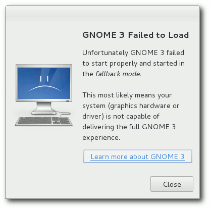

freiesMagazin Juli 2011 (ISSN 1867-7991)
Topthemen dieser Ausgabe
Fedora 15
Das neu erschienene Fedora 15 will den Benutzern wie jedes halbe Jahr die neueste freie Software und neueste Technologien bringen. Zu den Highlights zählt aus Benutzersicht sicherlich GNOME 3, welches im Artikel neben KDE beleuchtet wird. (weiterlesen)
Perl-Tutorial: Teil 0 – Was ist Perl?
Die am 14. Mai erschienene Version 5.14 wäre ein guter Vorwand, sich mit der Sprache zu beschäftigen, die so viele emotionale Reaktionen provoziert. Ein besserer Grund sind aber die Funktionalitäten, Module, Werkzeuge und Webseiten, welche die Programmierlandschaft namens Perl in den letzten Jahren stark verändert haben. (weiterlesen)
Trine – Aller guten Dinge sind drei
Es heißt, aller guten Dinge sind drei. Und ob nun die Dreifaltigkeit, die Heiligen Drei Könige oder die drei kleinen Schweinchen, Drei kommt gut. Das hat sich wohl auch das Entwicklerstudio Frozenbyte gedacht, als sie das Spiel Trine (gesprochen wie „3n“) entwickelten. (weiterlesen)
Zum Index
Inhalt
Linux allgemein
Fedora 15
Über Benchmarks
Der Juni im Kernelrückblick
Anleitungen
Python – Teil 8: Schöner iterieren
Perl-Tutorial: Teil 0 – Was ist Perl?
Easy Game Scriptin mit Lua (EGSL)
Webcambilder einlesen und bearbeiten mit Python und OpenCV
Software
Trine – Aller guten Dinge sind drei
Community
Rezension: Seven Languages in Seven Weeks
Rezension: Vi an Vim Editors
Magazin
Editorial
Veranstaltungen
Vorschau
Konventionen
Impressum
Zum Index
Editorial
Noch mehr Programmierung!Neue Programmierartikel
Wie in den letzten Monaten häufiger, steht freiesMagazin auch in dieser Juli-Ausgabe einmal mehr im Zeichen der Programmiersprachen – und das gleich über mehrere Artikel hinweg. Wir vervollständigen die Python-Reihe in freiesMagazin [1] [2] um einen weiteren Artikel von Daniel Nögel mit dem Thema „Python – Teil 8: Schöner iterieren“. Überdies startet Herbert Breunung mit einem „Perl-Tutorial: Teil 0 – Was ist Perl?“. Aber auch die praktische Seite der Programmierung wird beachtet: Markus Mangold zeigt in dem Artikel „Easy Game Scripting mit Lua (EGSL)“ wie mit EGSL kleinere zweidimensionale Spiele ohne viel Aufwand programmiert werden können. Darauf folgt prompt der Artikel „Webcambilder einlesen und bearbeiten mit Python und OpenCV“ von Wolfgang Wagner – Thema: mit beiden Komponenten auf Bewegungen im Bild reagieren.…und noch mehr Themen
Darüber hinaus wagen wir mit Mirko Lindner einen Ausblick auf das neu erschienene Fedora 15 „Lovelock“: Änderungen und Neuigkeiten werden vorgestellt sowie ein Draufblick auf das neue GNOME 3 gegeben, das schon an vielen Orten für Erstaunen und Verwirrung gesorgt hat. Aber das ist noch nicht alles. Denn kurz darauf zeigt Martin Gräßlin die Problemstellen der sogenannten Benchmarks auf, deren Messwerte als Zahlen oft im Gewand der Eindeutigkeit daherkommen, aber nur vordergründig für Klarheit sorgen, solange deren Entstehung und Kontext im Verborgenen bleiben. Weiterhin sorgt Dominik Wagenführ, seines Zeichens freiesMagazin-Chefredakteur, für eine Runde Kurzweil mit der Vorstellung des Spiels „Trine“, einer Mixtur aus Physik- und Rollenspiel. Schließlich können wir noch die Rezensionen zweier Bücher vorweisen: Jochen Schnelle hat sich das Buch „Seven Languages in seven Weeks“ (von Bruce A. Tate) durchgelesen und kommt zu dem Schluss, dass dieses Buch „eine andere Art von IT-Literatur ist, mit frischem Ansatz“. In der zweiten Rezension stellt Michael Niedermair das Buch „Vi and Vim Editors“ vor – und der Titel ist Programm. Und nun wünschen wir Ihnen viel Spaß mit der neuen Ausgabe. Ihre freiesMagazin-Redaktion Links[1] http://www.freiesmagazin.de/20110417-python-sonderausgabe-erschienen
[2] http://www.freiesmagazin.de/20110501-maiausgabe-erschienen
Das Editorial kommentieren
Zum Index
Fedora 15
von Hans-Joachim Baader Das neu erschienene Fedora 15 will den Benutzern wie jedes halbe Jahr die neueste freie Software und neueste Technologien bringen. Zu den Highlights zählt aus Benutzersicht das neue GNOME 3. Redaktioneller Hinweis: Der Artikel „Fedora 15“ erschien erstmals bei Pro-Linux [1].Vorwort
Fedora 15 „Lovelock” stellt die neueste Version der alle sechs Monate erscheinenden Linux-Distribution dar. Wie man den Anmerkungen zur Veröffentlichung [2] entnehmen kann, kommt Fedora 15 mit GNOME 3.0.0, das die neue GNOME Shell enthält, sowie den neuesten Versionen von KDE (4.6.3) und Xfce (4.8.1). Das neue Init-System systemd [3] wird standardmäßig eingesetzt. Systemd, dessen aktuelle Version 26 ist, dient auch zur Sitzungsverwaltung. LibreOffice 3.3.2 ersetzt OpenOffice.org, und Firefox 4 wurde in Version 4.0.1 integriert. Dieser Artikel wird sich auf die Desktopumgebungen GNOME 3 und KDE beschränken. Aus praktischen Gründen sind auch andere Einschränkungen nötig. So wurden natürlich zahlreiche zur Distribution gehörende Softwarepakete geändert oder ersetzt. Mit wenigen Ausnahmen kann auf diese Änderungen nicht eingegangen werden; man darf annehmen, dass die meisten Pakete unter allen aktuellen Distributionen nahezu gleich sind und überall gleich gut funktionieren. Wie immer sei angemerkt, dass es sich hier nicht um einen Test der Hardwarekompatibilität handelt. Es ist bekannt, dass Linux mehr Hardware unterstützt als jedes andere Betriebssystem, und das überwiegend bereits im Standard-Lieferumfang. Ein Test spezifischer Hardware wäre zu viel Aufwand für wenig Nutzen. Dies sei denen überlassen, die es für nötig halten. Falls es Probleme mit Hardware gibt, stehen die Webseiten des Fedora-Projekts zur Lösung bereit.Bootloader der Live-CD von Fedora 15.
Da eine Erprobung auf realer Hardware nicht das Ziel des Artikels ist, werden für den Artikel zwei identische virtuelle Maschinen, 64 Bit, unter KVM mit jeweils 768 MB RAM verwendet. Weil KVM nicht die nötigen Voraussetzungen für GNOME 3 bietet, wurde wie beim Test von Ubuntu (siehe „Ubuntu 11.04 – Vorstellung des Natty Narwhal“, freiesMagazin 06/2011 [4]) versucht, dafür eine 64-Bit-VM unter Virtualbox zu verwenden. Dabei zeigte sich, dass Version 4.0.6 noch keine ausreichende Funktionalität bei der Hardware-Beschleunigung bot. Ein Update auf Version 4.0.8 sollte Abhilfe schaffen. Allerdings stürzte die VM kurz nach dem Start von GNOME 3 ab. Das Problem blieb ungelöst. Für den Test von GNOME 3 wurde dann ein Acer-Netbook A150L verwendet.
Installation
Fedora kann von DVD, einem Satz von CDs, Live-CDs oder minimalen Bootmedien installiert werden. Natürlich kann man aus einem ISO-Image auch ein USB-Medium für die Installation erstellen. Die Live-CDs, in den Varianten GNOME und KDE, sind aufgrund ihres geringen Umfangs eher eine Notlösung für die Installation, denn es fehlen dann unter anderem LibreOffice und Übersetzungen. Zwar erfolgt die Installation binnen Minuten, da hierbei offenbar mehr oder weniger nur ein Abbild der CD auf die Platte geschrieben wird, aber für normale, vollständige Installationen sind die DVD oder das minimale Image vorzuziehen, bei dem die eigentliche Distribution über das Netz installiert wird.
Auswahl der Zeitzone im Installer.
Die Installation von Fedora erfordert mindestens 256 MB RAM für den Textmodus und 768 MB für die grafische Installation. Die verhältnismäßig hohe Anforderung von 768 MB kann aufgrund von Änderungen im grafischen Installer nötig sein, um die Installation überhaupt abschließen zu können; das Team will aber daran arbeiten, dass die Anforderung in Fedora 16 wieder auf 512 MB reduziert wird. Installiert man von den Live-CDs, dann ist der grafische Installer die einzige Option. Bei den anderen Medien ist die grafische Version des Installers Anakonda die Standardoption. Die textbasierte Version kann man starten, indem man die GRUB-Zeile um das Wort text ergänzt. Das Dateisystem Btrfs steht als Option bei der Installation zur Verfügung, aber das Standard-Dateisystem ist derzeit noch ext4. Es ist geplant, Btrfs in Fedora 16 zum Standard-Dateisystem zu machen, wenn das Werkzeug btrfsck für Dateisystemreparaturen ausgereifter ist. Das unter Mitwirkung von Fedora entwickelte btrfsck unterliegt in der aktuellen Version noch einigen Einschränkungen. Außerdem kann der verwendete Bootloader GRUB nicht von Btrfs (oder XFS) booten. Die grafische Installation ist gegenüber Fedora 14 nahezu unverändert. Die Auswahl der Zeitzone geht mit der Maus nun leichter vonstatten, da bei einem Klick auf eine Region diese automatisch herangezoomt und die nächstgelegene Stadt gewählt wird. Standardmäßig wird keine separate /home-Partition angelegt, was nicht sehr update- oder wiederherstellungsfreundlich ist. Aufgrund von Mount-Tricks sieht es zwar so aus, als ob eine eigene Home-Partition verfügbar wäre, sie ist aber identisch mit der Root-Partition. Für das Mounten ist nun systemd zuständig, was bedeutet, dass die meisten Dateisysteme nicht mehr in /etc/fstab auftauchen. LVM wird für die Partitionierung verwendet, und Verschlüsselung und RAID sind verfügbar. Bezüglich der Partitionierung kann wohl niemand Fedora etwas vormachen. Im eigens bereitgestellten Installationshandbuch [5] werden alle verfügbaren Optionen erörtert und Tipps gegeben. Dort wird unter anderem davor gewarnt, /usr auf eine separate Partition zu legen, und es ist nun auch der Tipp enthalten, momentan nicht benötigten Platz erst später nach Bedarf zu vergeben, weil man LVM-Partitionen und Dateisysteme im laufenden Betrieb leicht vergrößern kann.
Der leere KDE-Desktop.
Ausstattung
Fedora 15 startet etwa genauso schnell wie sein Vorgänger. Dass nahezu alle Softwarepakete, bei denen das möglich war, aktualisiert wurden, versteht sich von selbst. Der Kernel wurde auf Version 2.6.38.6 gebracht. Als Desktop-Systeme stehen unter anderem KDE SC 4.6.3 und GNOME 3.0.1, teils mit Updates, zur Verfügung. Der Standard-Browser unter GNOME ist Firefox 4.0.1. Unter KDE steht neben dem etatmäßigen Konqueror ebenfalls Firefox zur Verfügung. Firefox ist als 64-Bit-Version generiert, er bringt standardmäßig das Plug-in nspluginwrapper mit, um auch 32-Bit-Plug-ins integrieren zu können. Beim Start von GNOME war die Netzwerkverbindung zwar eingerichtet, aber nicht aktiviert; es war eine manuelle Aktivierung durch Klick auf den NetworkManager nötig. Noch schlechter verhielt sich KDE: Dort war die Netzwerkverbindung nicht einmal vorhanden, was einige zusätzliche Klicks im NetworkManager erforderte. Die Standard-Office-Suite auf beiden Desktops ist LibreOffice 3.3.2. Sie benötigte beim ersten Start deutlich länger als das in Fedora 14 enthaltene OpenOffice 3.3.0. Eine Betrachtung der Funktionalität würde diesen Artikel sprengen und kann daher hier kein Thema sein.Firefox 4 (hier im Fallback-Modus von GNOME).
Im Dateisystem fallen die neuen Verzeichnisse /cgroup und /run auf. Ersteres ist leer und wahrscheinlich für das Mounten des cgroup-Pseudodateisystems gedacht, es fehlen aber Informationen dazu. /run hingegen ist der sinnvollere Ersatz [6] für /var/run, wie er wohl bald im File Hierarchy Standard und in den meisten anderen Distributionen Einzug halten wird. Informationen über die von Systemd verwalteten Dienste, von denen jeder seine separate Control Group erhält, sind unter /sys/fs/cgroup/systemd zu finden. Wie immer ist in Fedora SELinux eingebunden und aktiviert. Aufgrund der Neuerungen vor allem rund um Systemd ist noch mit gelegentlichen Fehlermeldungen zu rechnen, die allerdings nicht fatal sind; offenbar sind die neuen Profile noch nicht ganz ausgereift. Brauchbar, wenn auch teilweise extrem umständlich sind die Tools zur Diagnose und Behebung von Problemen. Man muss jedes Problem einzeln anklicken und erhält teilweise keine Lösung, sondern nur die Möglichkeit, einen Fehler zu melden, oder es wird eine Kommandofolge vorgeschlagen, die man dann in einem Terminal ausführen soll. GNOME 3 benötigt in Fedora 15 direkt nach dem Start mit einem geöffneten Terminal-Fenster etwa 240 MB RAM, KDE satte 100 MB mehr. Wer der Meinung ist, auf Nepomuk und Desktopsuche in KDE verzichten zu können, kann diese abschalten, wird dadurch aber fast nichts einsparen. Die GNOME-Umgebung braucht damit in der neuen Version trotz GNOME Shell kaum mehr RAM als vorher, es wurde offenbar einiges optimiert. Bei der Geschwindigkeit lässt sich kein nennenswerter Unterschied zwischen den Desktops feststellen, sofern genug RAM vorhanden ist. Für KDE bedeutet das, dass man mindestens 768 MB RAM haben sollte. Den Speicherverbrauch der Desktops zu messen ist nicht einfach. Schwankungen von 20 MB und mehr nach oben und unten sind möglich, je nach dem Zeitpunkt der Messung. Dies erklärt sich teilweise daraus, dass manche Programme bei ihrem Start einen oder mehrere Dienste starten. Diese Dienste werden bei Nichtbenutzung teilweise nach einiger Zeit auch wieder beendet. So sind die Angaben zum Speicherverbrauch nur als Anhaltswerte zu sehen, die sich je nach Hardware erheblich unterscheiden können.
GNOME 3
Fedora 15 ist eine der ersten Distributionen, die GNOME 3 einsetzt. GNOME 3 ist das erste nicht mehr binärkompatible Update von GNOME seit ca. zehn Jahren. Dies war mittlerweile überfällig durch das Update der Bibliothek GTK+ von Version 2.x auf 3. Die Entwickler nutzten die Gelegenheit, um ihren Code weiter aufzuräumen und führten beispielsweise das neue Konfigurationssystem GSettings und DConf ein, das GConf ersetzt. Das obsolete Komponentensystem Bonobo, das virtuelle Dateisystem gnome-vfs und die Bibliotheken libglade und libgnomeui wurden endlich entfernt. Als markanteste Änderung für die Benutzer ist der Ersatz des Panels durch die GNOME Shell und des Window-Managers Metacity durch Mutter zu sehen. Die meisten anderen GNOME-Anwendungen wurden lediglich aktualisiert und sind im Wesentlichen wie zuvor, nur natürlich mit der ein oder anderen Verbesserung. An der GNOME Shell schieden sich schon lange vor der Veröffentlichung die Geister, wobei sicher viele Faktoren eine Rolle spielten. Wer eine Betaversion ausprobierte, dürfte naturgemäß auf Probleme gestoßen sein, die im veröffentlichten GNOME 3 gar nicht mehr existieren. Ein paar Dinge, die für Unmut sorgten, waren vielleicht auch nur in der Diskussion, wurden dann aber doch nicht realisiert. Tatsache ist, dass die Entwickler der GNOME Shell sich sehr viele Gedanken über die Benutzbarkeit gemacht haben. Daraus resultierten dann eine Reihe von Änderungen, die das Team auf gnome3.org [7] den Benutzern zu vermitteln versucht. Einige der hauptsächlichen Änderungen [8], die die GNOME Shell in Version 3.0 enthält, sind ein vereinfachtes Panel ohne Applets, Abschaffung der Minimieren/Maximieren-Buttons im Fensterrahmen, automatische Verwaltung von Arbeitsbereichen (gleichbedeutend mit Aktivitäten), Umfunktionieren von „Alt“ + „Tab“ zu einem Dialog, um das schnelle Wechseln zwischen Anwendungsfenstern zu ermöglichen, eine vertikale Schnellstartleiste, eine Übersicht über installierte Programme mit Suchfunktion (ähnlich Unity von Ubuntu) und durchgängige Bedienung mit der Tastatur, wenn man nicht die Maus benutzen will. GNOME 3 soll auf einer Vielzahl von Geräten mit unterschiedlichen Bildschirmgrößen und Bedienkonzepten nutzbar sein, von Netbooks über Tablets bis Desktops. Darin ähnelt es Unity von Ubuntu, was auch zu Ähnlichkeiten in einigen Konzepten führt. In den Details unterscheiden sie sich jedoch stark. Beim ersten Start von GNOME 3 wird ermittelt, ob das System Hardware-3D-Beschleunigung bietet. Falls nicht, wird ein Kompatibilitätsmodus gestartet, der optisch und von der Bedienung her mehr an GNOME 2 erinnert. Dennoch ist nichts mehr von GNOME 2 enthalten, außer den Bibliotheken einschließlich GTK+ 2, um ältere GNOME- und GTK-Anwendungen ausführen zu können. Wer über Hardware-Beschleunigung verfügt, kann diesen Modus auch als Option im Sitzungsmanager einstellen. Manche Benutzer sehen dies zwar als bessere Alternative zur GNOME Shell an, aber ab der kommenden Version wird diese Option voraussichtlich entfallen, weil dann die GNOME Shell auch ohne Hardware-Beschleunigung funktioniert. Ohne 3D-Beschleunigung gibt es nur den Fallback-Modus.
In der GNOME Shell ist das erste, was auffällt, dass statt zwei Panels nur noch eines vorhanden ist. Auf das untere Panel, das Anwendungs-Icons und Arbeitsflächenumschalter enthielt, wurde verzichtet. GNOME 3 stellt dafür andere Methoden bereit. Wer sich aber nach dem alten Panel zurücksehnt, wird keine Möglichkeit finden, es wieder herzustellen. Panels sind in GNOME 3 nicht mehr konfigurierbar. Auch das obere Panel wurde entschlackt. Statt der bekannten Menüs für Anwendungen, Orte und System findet man nur noch einen Button „Aktivitäten“, der zwar wie ein Menü aussieht, sich aber anders verhält. Ansonsten besteht das Panel nur aus der Uhr mit dahinterliegender Kalenderfunktion und den schon von früher bekannten Status- und Indikatormenüs. Im Benutzermenü sind die Systemeinstellungen untergebracht, die sich nun ein wenig wie die KDE-Systemeinstellungen präsentieren, aber nicht so umfangreich sind. In diesem Menü gibt es noch eine Besonderheit, den Menüpunkt „Suspendieren“, um den Rechner in den Schlafzustand zu versetzen. Den ebenfalls zu erwartenden Menüpunkt „Herunterfahren“ findet man nicht. Erst wenn man die „Alt“-Taste drückt, wird aus dem „Suspendieren“ ein „Herunterfahren“. Dieses Verhalten kann nur als Fehlentwicklung eingeschätzt werden. Applets sind nicht mehr vorgesehen. Der Schmerz über den Verlust der Applets dürfte sich aber in Grenzen halten. Bei vielen Anwendern dürften Applets gar nicht oder nur vereinzelt zur Anwendung gekommen sein. Zu jedem Applet existieren Programme mit äquivalenter oder weitergehender Funktionalität, und notfalls kann man immer noch ein Dock oder einen Applet-Container wie das beliebte gkrellm installieren. Einen teilweisen Ersatz werden Applets auch durch die Erweiterbarkeit der GNOME Shell finden, der man Plug-ins hinzufügen kann, die in JavaScript geschrieben werden. Der schon erwähnte Button „Aktivitäten“ ist der Dreh- und Angelpunkt von GNOME 3. Über ihn erreicht man den Anwendungs-Starter und die Arbeitsflächenansicht. Anwendungen lassen sich auch über „Alt“ + „F2“ starten. Dazu muss man jedoch den genauen Namen des Programms kennen, denn dieser Startdialog ist primitiv. Er merkt sich zwar eine Historie der Eingaben (leider auch falsche) und kann Pfade vervollständigen, bietet aber sonst keine Unterstützung bei der Eingabe. Hier wären wesentliche Erweiterungen wünschenswert. Der Aktivitäten-Bildschirm zeigt links eine vertikal angeordnete Starter-Leiste, die ähnlich wie bei Unity sowohl „Favoriten“ als auch aktuell laufende Programme enthält. Sie zeigt für jedes eingetragene Programm ein Icon, anfänglich in recht großer Ausführung. Je voller die Leiste wird, desto kleiner werden die Icons. Ein Ziehharmonika-Effekt wie bei Unity ist nicht vorhanden. Ist das Minimum der Icon-Größe erreicht, führen zusätzlich hinzugefügte Programme dazu, dass einige Icons nicht mehr sichtbar sind – und es gibt keine Möglichkeit, zu scrollen. Konfigurationsmöglichkeiten existieren ebenfalls nicht, sodass die Implementierung insgesamt unbefriedigend ist.
Aktivitätsübersicht in GNOME 3.
Der Hauptteil des Aktivitäten-Bildschirms hat mehrere Funktionen. Zum einen zeigt er verkleinerte Abbildungen der Fenster der aktuell ausgewählten Arbeitsfläche. Die Anordnung dieser Fenster entspricht nicht der realen Anordnung auf dem Desktop, und die Größe der Darstellung hängt von der Anzahl der Fenster ab. Der Vorteil dieser Darstellung ist, dass man alle Fenster ohne Überlappung sieht. Fährt man mit dem Mauszeiger zur rechten oberen Ecke eines Fensters, erscheint dort ein Schließen-Button. Ob das Schließen aber eine so wichtige Operation ist, dass man eine solche Funktionalität in der Übersicht benötigt, darf bezweifelt werden. Zum zweiten kann man durch Klicken auf „Applications“ (die Übersetzung scheint noch zu fehlen) in eine Dashboard-artige Ansicht wechseln. Hier wird für jede installierte Anwendung ein Icon angezeigt. Die Ansicht lässt sich scrollen, sie lässt sich aber auch auf Kategorien oder Suchbegriffe einschränken. Die Suche funktioniert auch in der Fensterübersicht und ist jedenfalls eine praktische Neuerung. Durch einen Klick auf das Icon wird die entsprechende Anwendung gestartet; über das Kontextmenü (rechte Maustaste) kann man sie auch den Favoriten hinzufügen. Das Arbeiten mit Einzel- statt Doppelklicks, das nun an vielen Stellen anzutreffen ist, dürfte für viele bisherige GNOME-Benutzer gewöhnungsbedürftig sein. Zum dritten befindet sich rechts auch noch, standardmäßig halb verborgen, die Übersicht über die existenten Arbeitsflächen, wiederum in vertikaler Anordnung. Bewegt man die Maus in diesen Bereich, wird die Übersicht vollständig hereingeschoben, wobei sich die zentrale Fensterübersicht etwas verkleinert. Dieser Effekt scheint unnötig, genausogut könnte die Übersicht, die durchaus mit früheren „Pagern” vergleichbar ist, ständig voll sichtbar sein. In der Ansicht lassen sich die Fenster auf den Arbeitsflächen in ihrer realen Anordnung erkennen und von einer Arbeitsfläche auf eine andere verschieben. Die Verwaltung der Arbeitsflächen erfolgt dynamisch. Sie sind linear angeordnet. Hinter der letzten Arbeitsfläche, in der ein Fenster liegt, wird automatisch eine neue leere Arbeitsfläche angelegt. Eine Arbeitsfläche, die leer wird, wird dagegen sofort entfernt – ungünstig, wenn sie aus Versehen geleert wird, denn eine Umkehrung der Operation ist nicht vorgesehen. Eine bessere, durchaus akzeptable Lösung wäre es, leere Arbeitsflächen einfach stehen zu lassen und lediglich zwei leere Arbeitsflächen am Ende der Reihe zu einer reduzieren. Die Begriffe Aktivität und Arbeitsfläche sind, wie schon erwähnt, austauschbar. Die Entwickler von GNOME 3 wollten unter anderem den Wechsel zwischen Arbeitsflächen schnell und einfach machen. Daher gibt es viele Wege, dies zu tun, manche sind aber nicht gerade effizient. So gibt es Tastenkürzel, um die oberhalb oder unterhalb liegende Arbeitsfläche zu erreichen („Strg“ + „Alt“ + „Pfeil hoch“ bzw. „Strg“ + „Alt“ + „Pfeil runter“). Will man von der vierten in die erste Arbeitsfläche wechseln, erfordert das drei Tastendrücke. Die Kombination „Strg“ + „F1“ usw. wie bei KDE ist nicht definiert, man kann sie über den Einstellungsdialog aber einstellen, womit man jede Arbeitsfläche mit einem Tastendruck erreicht. Man kann allerdings nur Kürzel für so viele Arbeitsflächen definieren, wie aktuell existieren. Eine weitere Möglichkeit ist der Weg über die Aktivitätenansicht, der eindeutig zu umständlich ist. Schneller geht es mit „Alt“ + „Tab“.

Systemeinstellungen von GNOME 3.
„Alt“ + „Tab“ sorgt, wie man es gewohnt ist, für das Umschalten zwischen Anwendungen. Es wird ein Dialog gezeigt, der alle offenen Anwendungen als Icons zeigt, auch wenn sie auf anderen Arbeitsflächen liegen. Senkrechte Striche deuten dabei die verschiedenen Arbeitsflächen an. So lässt sich ein schneller Wechsel erreichen. Komplizierter wird es, wenn man mehrere Instanzen derselben Anwendung gestartet hat. Diese werden alle unter einem Icon zusammengefasst. Wechselt man zu diesem und lässt die Alt-Taste noch nicht los, dann erscheint nach einer Sekunde darunter eine Auswahl der einzelnen Fenster. Es ist möglich, aber umständlich, eines davon mit der Maus auszuwählen. Stattdessen sollte man wissen, dass man, die „Alt“-Taste gedrückt lassend, mit der Taste über dem Tab (auf deutschen Tastaturen das „^“), zwischen diesen Fenstern zyklisch wechseln kann. An diese Funktion kann man sich sicherlich gewöhnen; ob sie optimal ist, sei dahingestellt. Der neue Window-Manager bringt noch einige weitere neue Funktionen mit. So wird ein Fenster maximiert, wenn man es nach oben an das Panel zieht. Zieht man es wieder weg, wird die ursprüngliche Größe wieder hergestellt. Dasselbe bewirkt ein Doppelklick auf die Titelleiste. Durch Ziehen an den linken oder rechten Bildschirmrand wird ein Fenster nur in der Vertikalen maximiert, was praktisch sein kann, wenn man zwei Fenster nebeneinander stellen will. Es gibt aber auch Fälle, in denen das nicht gewünscht ist, nur ändern lässt es sich nicht. Für das Minimieren von Fenstern ist kein Button in der Titelleiste mehr vorgesehen. Über das Fenstermenü ist es immer noch möglich. Das Fenster wird damit effektiv unsichtbar, da kein Icon dafür auf dem Desktop oder in einem Panel platziert wird. Nur über „Alt“ + „Tab“ lässt es sich wieder herstellen. Benachrichtigungen erscheinen nun am unteren Bildschirmrand ähnlich wie bei KDE. Instant Messaging ist jetzt vollständig in den Desktop integriert. Auch wenn GNOME 3 noch einige Einstellungen zulässt, würden einige weitere nicht schaden. Man kann den dconf-editor installieren, um direkten Zugriff auf alle GNOME-Einstellungen zu erhalten, aber bei solchen Dingen sollte man wissen, was man tut. Zudem besitzen die GNOME Shell und Mutter auch da nur sehr wenige Einstellungen. Einige weitere Einstellungen werden mit dem gnome-tweak-tool zugänglich gemacht, aber auch das hat Grenzen. Weiteres ist im GNOME-3-FAQ von Fedora [9] zu finden. Es ist die offizielle Politik von GNOME, so wenig Einstellungsmöglichkeiten wie möglich anzubieten. Man kann nur hoffen, dass sich das ändert. In der Zwischenzeit sorgt die Gemeinschaft mit Plug-ins für die GNOME Shell [10] für Abhilfe bei einigen der Probleme. Zur Zeit existieren erst wenige Plug-ins, aber einige darunter sind bereits empfehlenswert.
KDE
KDE liegt nun in Version 4.6.3 vor, gegenüber 4.5 mit der Möglichkeit, Anwendungen und Dateien einer Aktivität zuzuordnen, einer neu geschriebenen Energieverwaltung, optimiertem KWin und vielen Verbesserungen in den einzelnen KDE-Anwendungen. GTK-Anwendungen sollen optisch dank eines neu geschriebenen Oxygen-GTK-Themes noch besser in die KDE-Umgebung passen. Feststellbar ist das kaum, wie man am Bild der Paketmanager weiter unten sehen kann. Ansonsten bringt KDE ein neues Standard-Hintergrundbild mit. Die Icons aus der letzten Version wurden beibehalten, was Geschmackssache ist. Viele KDE-Anwendungen wurden natürlich auch stark verbessert. Insgesamt gibt es an KDE nicht viel auszusetzen.
KDE 4.6 mit Applikationen.
Multimedia im Browser und auf dem Desktop
Wie gewohnt bringt Fedora den Multimedia-Server PulseAudio in der neuesten Version mit. Auch der Musicians' Guide [11], der Einsteigern eine Anleitung zu Audio-Software unter Linux geben soll, wurde aktualisiert. Ansonsten gab es in diesem Bereich aber wenig Neues. Wegen der Softwarepatente in den USA kann Fedora, ebenso wie die meisten anderen Distributionen, nur wenige Medienformate abspielen, da es viele benötigte Codecs nicht mitliefern kann. Wenn man versucht, eine MP3- oder Videodatei abzuspielen, dann bieten die gängigen Player aber die Option an, über die Paketverwaltung nach passenden Plug-ins zu suchen. Damit das Aussicht auf Erfolg hat, muss man aber vorher in der Paketverwaltung die zusätzlichen Repositorien eintragen. Wenn man weiß, wie es geht, ist es im Prinzip ganz einfach. Über die Webseite von RPM Fusion [12] kann man Pakete installieren, die die Repositorien hinzufügen. Dies gilt für GNOME wie für KDE. Nach dieser Vorbereitung sollten die Player unter GNOME und KDE in der Lage sein, die benötigten Plug-ins selbsttätig zu installieren. Merkwürdigerweise hat Totem aber ein Problem, wenn man ausgerechnet mit der Suche nach einem MP3-Plug-in anfängt und noch keine Codecs installiert sind – diese Suche schlägt fehl. Bei Videoformaten funktioniert es aber. Die Alternative ist eine manuelle Installation der GStreamer-Plug-ins, insbesondere gstreamer-ffmpeg. Totem erscheint bei Installation von DVD auch unter KDE als Standard-Medienplayer, auch für MP3-Dateien. Kaffeine und Dragonplayer sind als Alternativen installiert. Nach Installation des Gnash-Plug-ins in Version 0.8.9 und Lightspark 0.4.8 ließen sich diverse Flash-Videos im Web abspielen. Leider sind weder Gnash noch Lightspark perfekt, so funktionierte beispielsweise Youtube, ZDF „Heute” (Flash-10-Format) dagegen nicht. WebM-Videos funktionierten in Firefox problemlos. In Konqueror funktionierten die meisten Videos einschließlich WebM gar nicht.KPackageKit und gpk-application unter KDE.
Ein paar Verbesserungen gab es bei Fedora im Bereich der Paketverwaltung. Das GNOME-Frontend von PackageKit, gpk-application, kann jetzt auch Software-Repositorien hinzufügen oder entfernen und ist damit endlich vollständig. Die Package-Suites, Zusammenstellungen von thematisch zusammengehörenden Paketen, wurden erweitert und umorganisiert. Die Gruppe Graphics Suite wurde in Design umbenannt, und Robotics kam neu hinzu. Auf KDE-Seite war in den letzten Versionen stets KPackageKit mein Lieblingsblock, um darauf einzuhacken. Das hat nun ein Ende. In der neuesten Version 0.6.3.3 wurde eine Repositorien-Verwaltung hinzugefügt, sodass nun alles, was man für die Paketverwaltung und Updates benötigt, vorhanden ist. Zwar hätte man die Oberfläche, wie schon früher angemerkt, platzsparender gestalten können, und möglicherweise ist die Kombination von Such- und Filterfunktion immer noch nicht ganz intuitiv, aber das Programm versieht seinen Dienst einwandfrei. Beim ersten Update meldete KPackageKit allerdings schon wie in früheren Versionen einen unbekannten Repositorien-Schlüssel. Dies dürfte ein Konfigurationsfehler von Fedora sein. Ein Problem hat die Paketverwaltung auch mit dem Verhalten von Dialogboxen unter KDE. Das Problem ist aber vielleicht eher KDE selbst anzulasten. Möglicherweise aufgrund der Tatsache, dass mehrere verschiedene Prozesse an der Paketverwaltung beteiligt sind, kann es vorkommen, dass die Dialogbox, die zur Bestätigung die Eingabe des Root-Passworts verlangt, hinter anderen Fenstern zu liegen kommt, und wenn man nicht auf die Taskleiste achtet, kann man sich darüber wundern, dass die Paketverwaltung keinerlei Fortschritt mehr macht.
Systemd
Systemd [13] fügt sich ziemlich unauffällig in das System ein. Viele Dienste werden nun über Systemd verwaltet, eine Liste kann man sich mit systemctl list-units ausgeben lassen. Begrenzt man die Ausgabe mit grep, so findet man beispielsweise für die Firewall:UNIT LOAD ACTIVE SUB JOB DESCRIPTION ip6tables.service loaded active exited LSB: start and stop ip6tables firewall iptables.service loaded active exited LSB: start and stop iptables firewallDiese Dienste kann man mit
# systemctl restart iptables.serviceneu starten, mit stop beenden und noch viele weitere Operationen ausführen. Leider sind noch nicht alle Dienste auf systemd umgestellt, beispielsweise SSH. Diese muss traditionell über /etc/init.d verwaltet werden, wobei chkconfig helfen kann.
Weitere Neuerungen
Für Unternehmen wurde das Buchhaltungs- und Inventarsystem Tryton hinzugenommen. Das neue Werkzeug BoxGrinder soll es leicht machen, virtuelle Maschinen für Plattformen wie KVM, Xen und Amazon EC2 aus einfachen Definitionsdateien zu erzeugen. Für Softwareentwickler stehen zahlreiche aktualisierte Programmiersprachen, Compiler und Werkzeuge bereit. Dazu gehören neue Versionen wie Rails 3.0.5, OCaml 3.12, Python 3.2, GDB 7.3, GCC 4.6 und Maven 3. Netzwerk-Gerätenamen werden jetzt in konsistenter Weise benannt [14], wobei versucht wird, Informationen der Firmware (ACPI oder andere Methoden) zu nutzen. Wenn der Rechner keine geeignete Information bereitstellt, ändert sich nichts, wie beispielsweise beim Acer-Netbook, dessen Ethernet- und WLAN-Schnittstelle weiterhin eth0 und wlan0 heißen. Man kann die Änderung der Gerätenamen aber auch mit einer Bootoption verhindern oder mit udev-Regeln überschreiben. Eine optionale dynamische Firewall, realisiert mit einem Daemon, ermöglicht die Verwaltung über eine D-Bus-Schnittstelle. Viele weitere Änderungen zeichnen die neue Version aus. So wurde die Kompression auf den Live-Images durch die Verwendung von xz statt gzip erhöht, wodurch die Größe verringert bzw. mehr Software integriert werden konnte. Die Eingabemethoden für indische Sprachen wurden verbessert, die Meldung von Abstürzen und die Problembehandlung von SELinux ebenfalls. Die Verwaltung des verschlüsselten Dateisystems eCryptfs wurde in Authconfig integriert. DNSSEC kann nun auf Workstations verwendet werden. Dazu nutzt NetworkManager den DNS-Server BIND zum Auflösen und Verifizieren von Rechnernamen. Auch die Energieverwaltung wurde weiter verbessert.Fazit
Fedora 15 ist eine solide Distribution, die allerdings in der ersten Zeit nach der Veröffentlichung immer einige Probleme zeigt. Wer sich nicht mit der Lösung dieser Probleme aufhalten kann, sollte mit dem Update auf Fedora 15 einige Wochen warten. Wer sicherer vor Updates sein will, sollte vielleicht immer nur die zweitneueste Version einsetzen. Dabei macht sich allerdings der kurze Support-Zeitraum von Fedora negativ bemerkbar. Man ist im Prinzip gezwungen, alle sechs Monate zu aktualisieren. Aber eine große Zahl von Updates gehört bei Fedora prinzipiell dazu – für eine typische Installation von Fedora 15 dürften es schon jetzt mehr als 100 sein. Die vielen fortgeschrittenen Funktionen, beispielsweise bei der Virtualisierung, machen Fedora für fortgeschrittene Anwender interessant. Auch Entwickler werden mit den verschiedenen neuen oder aktualisierten Entwicklungsumgebungen stark umworben. GNOME 3 ist im Moment noch zwiespältig. Man darf aber nicht vergessen, dass es sich um eine erste Version handelt. Der Unterbau von GNOME 3 ist extrem solide, der Schwachpunkt ist in erster Linie die GNOME Shell. Das erinnert stark an den Übergang von KDE 3 zu KDE 4. Aber schon in der nächsten Version wird die GNOME Shell vermutlich stark verbessert sein, denn stellenweise sind es nur Kleinigkeiten, die fehlen. Das GNOME-Projekt sollte aber dringend für weitgehende Konfigurationsmöglichkeiten sorgen, wie es sie beispielsweise bei KDE gibt. Flexibilität ist eine der größten Stärken des Linux-Desktops, und nur mit maximaler Flexibilität ist es möglich, den Desktop an seine Arbeitsabläufe optimal anzupassen. Links[1] http://www.pro-linux.de/artikel/2/1511/fedora-15.html
[2] http://docs.fedoraproject.org/en-US/Fedora/15/html/Release_Notes/
[3] http://www.pro-linux.de/news/1/16068/statusbericht-von-systemd.html
[4] http://www.freiesmagazin.de/freiesMagazin-2011-06
[5] http://docs.fedoraproject.org/en-US/Fedora/15/html/Installation_Guide/
[6] http://www.pro-linux.de/news/1/16986/systemd-will-konfigurationsdateien-vereinheitlichen.html
[7] http://gnome3.org/
[8] https://live.gnome.org/GnomeShell/Tour
[9] http://www.fedorawiki.de/index.php/Gnome_3_FAQ
[10] https://live.gnome.org/GnomeShell/Extensions
[11] http://docs.fedoraproject.org/en-US/Fedora/15/html/Musicians_Guide/index.html
[12] http://rpmfusion.org/
[13] https://fedoraproject.org/wiki/Systemd
[14] http://www.pro-linux.de/news/1/16636/konsistente-benennung-der-netzwerkschnittstellen-unter-linux.html
| Autoreninformation |
| Hans-Joachim Baader (Webseite) befasst sich seit 1993 mit Linux. 1994 schloss er sein Informatikstudium erfolgreich ab, machte die Softwareentwicklung zum Beruf und ist einer der Betreiber von Pro-Linux.de. |
Zum Index
Über Benchmarks
von Martin Gräßlin Immer wieder werden in der Open-Source-Gemeinde verschiedenste Programme an Hand von willkürlichen Zahlen miteinander verglichen. In vielen Fällen haben diejenigen, die die „Benchmarks“ durchführen, jedoch keinen technischen tieferen Einblick in das, was sie eigentlich vergleichen, und es werden einfach nur Zahlen ohne jegliche Interpretation vorgelegt. In diesem Artikel wird am Beispiel eines auf Phoronix veröffentlichten Benchmarks aufgezeigt, wie wichtig es ist, die Benchmarks kritisch zu betrachten und „Zahlen“ nicht spekulativ zu interpretieren. Die Nachrichtenseite Phoronix [1], mit dem Schwerpunkt X und Linux, veröffentlicht regelmäßig Benchmark-Ergebnisse. Dabei wird die von Phoronix entwickelte „Phoronix Test Suite“ [2] eingesetzt. Betrachtet man die Ergebnisse, so stellt man sehr oft die gleichen konzeptionellen Fehler [3] in der Durchführung der Benchmarks fest. Bei Lesern, welche die Benchmarks kritisch betrachten, hört man auch, dass Phoronix „alles benchmarkt, was nicht bei drei auf den Bäumen ist“ [4]. Unglücklicherweise werden die auf Phoronix veröffentlichten Ergebnisse von Medien unreflektiert weiterverbreitet und Phoronix als verlässliche Quelle angesehen (was sie durchaus ist, jedoch nicht bei Benchmarks wie gezeigt wird).Gute Benchmarks
Zuerst vorweg: Benchmarks sind, wenn sie richtig durchgeführt werden, eine wichtige Unterstützung in der Softwareentwicklung und auch in der Freien-Software-Welt eine wichtige Komponente. Ein guter Benchmark kann sehr schnell Regressionen feststellen oder aufzeigen, ob eine Optimierung überhaupt sinnvoll ist. Anhand eines falschen Benchmark-Ergebnis zu optimieren, kann allerdings zu einer Verschlechterung der vorherigen Situation führen. Einen guten Benchmark aufzusetzen ist leider nicht einfach – es muss die wissenschaftliche Methodik [5] eingehalten werden. Ein Benchmark ist zu betrachten wie ein naturwissenschaftliches Experiment, d. h. jemand anderes muss unter gleichen Bedingungen die Ergebnisse reproduzieren können und die Werte müssen normalisiert sein. Die Versuche müssen mehrmals durchgeführt werden und die Beeinflussung von externen Störfaktoren muss ausgeschlossen werden. Ein guter und aussagekräftiger Benchmark zum Vergleich verschiedener Anwendungen erfordert daher den Aufwand vergleichbar mit wissenschaftlichen Arbeiten. Am wichtigsten bei einem Benchmark ist jedoch seine Interpretation. Einfach nur die Zahlen zu präsentieren, ist kein aussagekräftiger Benchmark. Die Zahlen müssen verstanden und erklärt werden. Abweichungen zu bestehenden theoretischen Annahmen müssen betrachtet und dürfen nicht einfach ignoriert werden, da sie auf einen Fehler im Versuchsaufbau hinweisen können.Falsche Benchmarks
Der Klassiker unter den falsch verstandenen Benchmarks ist das Programm glxgears. Führt man es aus, wird in der Konsole alle fünf Sekunden die Anzahl der gerenderten Frames ausgegeben. Viele Anwender nutzen diese Zahlen zum Vergleich von Systemen oder melden sogar Bugreports, weil sich die Anzahl der Frames verschlechtert. Jedoch ist glxgears kein Benchmark [6]. Seit einiger Zeit verwendet glxgears VSync [7], womit die Zahlen sowieso der Bildschirmfrequenz von in der Regel 60 Hz entsprechen. Jedes mehr gerenderte Frame kann von der Hardware nicht dargestellt werden und ist somit eine Verschwendung von Rechenzeit. Jedoch hätte glxgears auch ohne diese Einschränkung keine Aussagekraft, da es völlig realitsätsferne Elemente der OpenGL-API austestet, wie sie so von keiner modernen OpenGL-Anwendung verwendet wird. Bei glxgears ist es sogar wahrscheinlich, dass die Softwareemulation bessere Ergebnisse liefert als eine hardwarebeschleunigte Ausführung.glxgears ist kein Benchmark-Programm.
Fallbeispiel Phoronix
Der Phoronix Benchmark „How Unity, Compiz, GNOME Shell & KWin Affect Performance“ [8] (deutsch: „Wie Unity, Compiz, GNOME Shell und KWin die Leistung beeinflussen“) hat in etwa so viel Aussagekraft wie ein mit glxgears durchgeführter Benchmark. Ziel des Benchmarks ist es, herauszufinden wie die Leistung (d. h. Anzahl gezeichneter Bilder pro Sekunde) von OpenGL-Computerspielen unter verschiedenen Fenstermanagern und Desktopumgebungen beeinflusst wird, und zwar unter Betrachtung des Einflusses von OpenGL-Compositing [9]. Betrachtet man den Artikel, so fallen sofort einige Fehler in der Durchführung auf. Der Benchmark erfolgte auf einem Grundsystem einer Distribution und für die verschiedenen Tests wurde die Grafikkarte ausgetauscht. Um einen allgemeingültigen Benchmark zu erhalten, hätte der Test auf verschiedenen Hardwareplattformen ausgeführt werden und auf jedem System hätten mehrere Distribution verwendet werden müssen. In der dargestellten Ausführung ist die einzige Aussagekraft des Benchmarks, dass unter dem getesteten System die angegebenen FPS der verschiedenen Spiele erreicht wurden. Ob das eine allgemeingültige Aussage hat, wie sie zum Teil abgeleitet wurde [10], kann aus den präsentierten Zahlen nicht erkannt werden. Das nächste offensichtliche Problem erkennt man, wenn man versucht, zu klären, wie oft die Tests wiederholt wurden. Man findet dazu im Artikel keine Angaben. Möchte man als interessierter Dritter die Ergebnisse reproduzieren, so ist dies nicht möglich, da wichtige Bestandteile der Testausführung nicht bekannt sind. So stellt sich die Frage, ob die Tests nur einmal durchgeführt wurden oder mehrmals, ob Ausrutscher herausgenommen wurden oder ob vielleicht die präsentierten Zahlen eigentlich Ausrutscher sind.Technische Rahmenbedingungen
Nun sollte man sich auch die Relevanz der Ergebnisse betrachten. Ist die Framerate in Spielen etwas, worauf die Fenstermanager hin optimieren? Ist die Framerate in dem Zusammenhang überhaupt relevant? Linux ist nicht als Spielerplattform bekannt. Daher ist es fraglich, ob Entwickler Zeit auf die Optimierung dieser investieren sollten. Zuerst sollte man wissen, dass OpenGL-Compositing einen erheblichen und zu erwartenden Overhead produziert. Die Entwickler sind sich dessen bewusst [11]. Durch die „Umleitung“ des Compositing-Vorgangs wird jede Anwendung zuerst in eine Off-Screen-Pixmap [12] und anschließend vom Compositor auf den Bildschirm gezeichnet, wozu von den bereits in OpenGL gezeichneten Frames eine OpenGL-Textur generiert und dann durch den Scenegraph des Compositors geschickt wird. Logischerweise kann jede Anwendung durch das Compositing nur noch die Framerate des Compositors erreichen, welcher in der Regel VSync ausführt. Also kann nur noch die Bildschirmfrequenz erreicht werden. Ohne Compositing kann eine Anwendung direkt in den Framebuffer zeichnen und so viele Frames zeichnen, wie sie will (auch wenn das nicht sinnvoll ist). Mit Compositing wird sie durch das Umleiten durch den Compositor gedrosselt. Anstatt einer Anwendung, die auf den Framebuffer zeichnet, sind nun drei Anwendungen involviert: das Spiel selbst, der Compositor und der X-Server. Auch für Spiele ist es nicht sinnvoll, mehr Frames zu zeichnen, als die Bildschirmfrequenz ermöglicht. Mit dem als X-Nachfolger gehandelten Wayland Display Server scheint es sowieso nicht mehr möglich zu sein, mehr Frames zu zeichnen, als der Compositor auf den Bildschirm bringen kann. Das heißt also, dass alle getesteten Fenstermanager gleich gut skalieren, falls die Spiele mindestens die Anzahl an Frames wie der Bildschirm liefern. Es gilt nicht, dass mehr Frames zwangsläufig besser sind. Bei fast allen Tests erreichen alle Fenstermanager Werte über der Bildschirmfrequenz. Bei den Tests, bei denen dies nicht der Fall ist, scheinen die Grafikkarte oder die Treiber an ihre Grenzen zu kommen, da Full-HD-Bildschirme verwendet werden. Die KWin-Entwickler vertreten, seitdem der Fenstermanager um OpenGL-Compositing erweitert wurde, die Position, dass man Compositing bei OpenGL-Spielen ausschalten soll und bieten dafür mit „Alt“ + „Shift“ + „F12“ standardmäßig ein Tastenkürzel an. In der kommenden Version 4.7 der KDE-Plasma-Workspaces gehen sie noch weiter und erlauben Anwendungen selbst, Compositing auszuschalten oder dem Nutzer dieses über Fensterregeln auf Anwendungsbasis bestimmen zu lassen [13] [14]. Mit diesem Wissen dürfte es klar sein, dass zumindest die KWin-Entwickler die Ergebnisse eines Benchmarks, wie von Phoronix durchgeführt, nicht ernst nehmen können. Die Entwickler haben ganz bestimmt nicht diesen Anwendungsfall optimiert. Ja, sie sehen es nicht einmal als validen Anwendungsfall an. Was Phoronix getestet hat, liegt außerhalb dessen, was KWin überhaupt abdecken will. Um so überraschender ist, dass KWin als „Benchmarksieger“ aus dem Test herausgeht. Phoronix ist sich der Einstellung der KWin-Entwickler bewusst und verweist auch im Artikel auf die Änderungen in der nächsten Version.Systematische Fehler
Somit muss man sich fragen, wie es zu den Ergebnissen kommen konnte. Diese Frage ist schwer zu beantworten, da erneut wichtige Informationen zum Wiederholen der Benchmarks fehlen. Um die Ergebnisse zu interpretieren, was Phoronix nicht macht, muss man daher leider Vermutungen anstellen. Mit dem Wissen als KWin-Maintainer dürfte eine der Wahrheit nahe kommende Analyse möglich sein: In den Standardeinstellungen verwendet KWin eine Option um Vollbindanwendungen nicht umzuleiten. Die Fenster werden somit fast so gezeichnet wie ohne Compositing, ein gewisser Overhead bleibt jedoch erhalten. Diese Option scheint bei allen Phoronix-Tests aktiviert zu sein. Bei Compiz muss diese Option jedoch manuell über CCSM aktiviert werden [15]. Dies alleine erklärt schon, warum KWin „besser“ abschneidet als Compiz. Jedoch wäre nun interessant zu wissen, wie sich die Zahlen ändern, wenn man die Option in Compiz ein- und in KWin ausschaltet. Phoronix liefert diese Antwort jedoch nicht. Man kann also davon ausgehen, dass Phoronix einen systematischen Fehler begannen hat und im Endeffekt Äpfel mit Birnen vergleicht. Dass der Nicht-Composited-Modus von KWin besser abschneidet als der Composited-Modus von Compiz, ist nun wirklich nicht überraschend. Dies hätte schon alleine dadurch auffallen müssen, dass KWin sogar besser abschneidet als GNOME2 mit Metacity – einem Fenstermanager ohne OpenGL-Compositing. Dies entspricht nicht Erwartung, dass ein OpenGL-Compositor einen Leistungseinbruch für jede hochfrequent zeichnende Anwendung mitbringt. Bleibt zuletzt das „schlechte“ Abschneiden von Mutter bei diesem Benchmark zu betrachten. Nach allem was soweit erläutert wurde, kann man davon ausgehen, dass die Zahlen auch für Mutter schlicht und ergreifend nicht interpretierbar sind. Von Messfehler bis korrektes Ergebnis ist alles denkbar. Klar dürfte sein, dass Mutter die Vollbild-Nicht-Umleitung noch nicht unterstützt (KWin in KDE 4.0 unterstützte diese auch noch nicht) und VSync aktiviert hat. Dies ist eine logische Erklärung für das insgesamt deutlich schlechtere Abschneiden von Mutter. Es ist auch darauf hinzuweisen, dass in jedem Test Mutter ein Ergebnis erzielt hat, welches einer Bildschirmfrequenz ähnelt oder sogar deutlich darüber liegt. Mutter ist in diesem Punkt also genauso gut oder schlecht wie alle anderen getesteten Fenstermanager. Zuletzt sollte man sich fragen: Ist das überhaupt relevant? Selbst wenn Mutter die FPS der Spiele reduziert, ist das von Bedeutung? Braucht man Spiele, die mehr als die Bildschirmfrequenz an Frames zeichnen? Heutzutage kann man Grafikkarten zur Physikberechnung verwenden und somit die CPU entlasten. Eine Reduzierung der FPS kann also sogar zu einer Verbesserung der Spielerfahrung führen. Es kann also durchaus „Weniger ist Mehr“ gelten. Unter dieser Annahme wäre somit KWin der Verlierer und Mutter der Sieger des Benchmarks.Fazit
Benchmarks, wie sie regelmäßig auf Phoronix veröffentlicht werden, sind ohne genauere Betrachtung nicht aussagekräftig und zum großen Teil schlicht falsch. Sie folgen keiner wissenschaftlichen Methodik und Phoronix ist sich dessen wohl sogar bewusst, da keine Interpretation der Ergebnisse vorgestellt wird. Selbst die Zahlen zu interpretieren, kann leicht zu falschen Ergebnissen führen. So ist die Annahme, dass mehr gerenderte Frames einer besseren Leistung entsprechen, im Allgemein nicht gültig. Mit sehr geringem Aufwand lassen sich die Testbedingungen so verändern, dass komplett gegensätzliche Ergebnisse entstehen. Im Endeffekt sind die Benchmarks nur eine Aneinanderreihung nicht aussagekräftiger Zahlen. Links[1] http://www.phoronix.com
[2] http://www.phoronix-test-suite.com/
[3] http://www.kdedevelopers.org/node/4180
[4] http://www.heise.de/newsticker/foren/S-Wieso-testet-heise-so-etwas-eigentlich-nicht-mehr-selber-heise-baut-echt-ab/forum-175858/msg-18210172/read/
[5] http://de.wikipedia.org/wiki/Wissenschaftliche_Methodik#Forschung
[6] http://wiki.cchtml.com/index.php/Glxgears_is_not_a_Benchmark
[7] http://de.wikipedia.org/wiki/VSync
[8] http://www.phoronix.com/vr.php?view=16073
[9] http://de.wikipedia.org/wiki/Composition-Manager
[10] http://games.slashdot.org/story/11/06/02/0416219/GNOME-Shell-Hurts-Gaming-Performance
[11] http://smspillaz.wordpress.com/2010/05/21/beware-the-benchmarks/
[12] http://en.wikipedia.org/wiki/Pixmap
[13] http://blog.martin-graesslin.com/blog/2011/05/plasma-compositor-and-window-manager-in-4-7
[14] http://blog.martin-graesslin.com/blog/2011/04/turning-compositing-off-in-the-right-way/
[15] http://wiki.compiz.org/GeneralOptions
| Autoreninformation |
| Martin Gräßlin (Webseite) wird als KWin-Maintainer immer wieder mit fehlerhaften Benchmarks konfrontiert und muss Nutzern oft erklären, warum Benchmarks nicht hilfreich sind. |
Zum Index
Der Juni im Kernelrückblick
von Mathias Menzer Basis aller Distributionen ist der Linux-Kernel, der fortwährend weiterentwickelt wird. Welche Geräte in einem halben Jahr unterstützt werden und welche Funktionen neu hinzukommen, erfährt man, wenn man den aktuellen Entwickler-Kernel im Auge behält. So ruhig, wie der aktuelle Entwicklungszyklus angefangen hatte, ging es erst einmal auch weiter. Linux 3.0-rc2 [1] war für einen -rc2 recht klein geraten, sodass Torvalds an die Freigabe-Mail gleich das Shortlog anfügte, eine Zusammenfassung der enthaltenen Patches, die er normalerweise erst bei späteren Vorabversionen dazu schreibt. Dessen Highlights bestanden in einer größeren Menge an Updates für btrfs und Korrekturen an Intels Speicherschnittstelle intel-iommu. Auch an virtio, einer Netzwerkimplementierung für virtuelle Maschinen, wurde gearbeitet. Aber ein bisschen Bewegung kam dann doch mit der nächsten Runde ins Spiel: Denn der -rc3 [2] hatte etwas mehr zu bieten, da nach dem Ende der LinuxCon in Japan die Entwickler wieder fleißig Patches einbrachten. So gab es einige Updates für den Radeon-Treiber, der sich nun auch mit AMDs Llano-Plattform, die Prozessor und Grafikkern auf einem Chip vereint, versteht. Der freie Nvidia-Treiber nouveau erhielt auch etwas Aufmerksamkeit, hier wurden ein paar Speicherfehler behoben. Daneben wurde die Unterstützung für LEON überarbeitet, der ersten unter einer freien Lizenz verfügbaren Mikroprozessorarchitektur [3]. LEON basiert dabei auf der SPARC-Architektur und wird aufgrund der Familienähnlichkeit innerhalb des Linux-Kernels auch im SPARC-Bereich gepflegt. RCU (Read-Copy-Update), eine Methode zur Synchronisation von Schreib- und Lesezugriffen auf den Speicher, konnte in 3.0-rc4 [4] ein Performance-Problem ausgetrieben werden, das in bestimmten Situationen auftrat. Dies ist auch schon ein guter Teil der Änderungen in der vierten Entwicklerversion, ein weiterer Batzen entfiel noch auf den neu hinzugekommenen Treiber für den LED-Hintgrundbeleuchtungs-Controller ADP8870. Viele weitere kleinere Korrekturen betrafen vor allem die Grafiktreiber nouveau und radeon sowie die meisten Dateisysteme, allem voran btrfs. Fiel -rc4 etwas kleiner aus als der Vorgänger, so schrumpfte -rc5 [5] fast schon auf ein handliches Maß. Das Microsoft-Netzwerk-Dateisystem CIFS sticht hier hervor, dem einige Fehler ausgetrieben wurden und auch an btrfs wurde weiter verbessert. Müssen sich Linux-Nutzer noch an die neue Versionsnummer „3.0“ gewöhnen, geht es den Werkzeugen rund um den Kernel nicht anders. Bereits in 3.0-rc1 zogen die ersten Änderungen ein, die notwendig waren, damit das Prüfen und Einbinden von Kernel-Modulen auch mit der zweistelligen Nummer klappt oder make einen Kompilierungsvorgang überhaupt erst erfolgreich übersteht [6]. Solche Dinge sind essentiell, da ohne Möglichkeit, den Kernel zu kompilieren, auch kein Testen und keine Fehlersuche möglich ist. Auf kernel.org [7] jedoch klafft nach wie vor noch eine Lücke, wo normalerweise eine komfortable Liste der Änderungen im Vergleich zum vorangegangenen -rc hinter dem Link [View Inc.] verborgen wäre – ein kleines Zeichen dafür, dass die rein kosmetische Änderung des Nummernschemas einen für Außenstehende nicht so einfach nachvollziehbaren Schwanz an Änderungen mit sich bringt. Links[1] https://lkml.org/lkml/2011/6/6/118
[2] https://lkml.org/lkml/2011/6/13/375
[3] http://de.wikipedia.org/wiki/LEON
[4] https://lkml.org/lkml/2011/6/21/2
[5] https://lkml.org/lkml/2011/6/27/396
[6] https://lkml.org/lkml/2011/5/30/212
[7] http://www.kernel.org
| Autoreninformation |
| Mathias Menzer (Webseite) hält einen Blick auf die Entwicklung des Linux-Kernels. Dafür erfährt er frühzeitig Details über neue Treiber und interessante Funktionen. |
Zum Index
Python – Teil 8: Schöner iterieren
von Daniel Nögel Im vorherigen Teil des Python-Tutorials (siehe freiesMagazin 05/2011 [1]) wurde das Iterator-Protokoll vorgestellt. Damit lassen sich eigene Klassen leicht so erweitern, dass über sie iteriert werden kann. In diesem Teil sollen nun mit Generator-Funktionen, List Comprehensions und Generator Expressions drei Techniken vorgestellt werden, mit denen sich iterierbare Objekte deutlich leichter erstellen lassen.Generator-Funktionen
Generatoren sind ein nützliches Werkzeug, um Iteratoren zu erzeugen. Nicht immer muss also ein Iterator umständlich über __iter__() und next() implementiert werden. Statt durch Klassen können Generatoren durch einfache Funktionen umgesetzt werden. Folgendes Beispiel zeigt, wie das RangeIterator-Beispiel aus dem vorherigen Teil mit einer Generator-Funktion aussieht:def range_generator(start, stop, step=1): i = start while i <= stop: yield i i += stepDiesen Generator unterscheidet zunächst nichts von einer gewöhnlichen Funktion. Bei näherer Betrachtung fällt aber das Schlüsselwort yield ins Auge: Es findet sich in Generator-Funktionen an Stelle des Schlüsselwortes return und macht aus einer gewöhnlichen Funktion eine Generator-Funktion. Diese Generator-Funktion kann nun wie ein Iterator genutzt werden:
>>> for i in range_generator(0, 10, 2): ... print i ... 0 2 4 6 8 10Wie funktioniert das? Beim Aufruf der Generator-Funktion wird zunächst automatisch ein Generator-Iterator erstellt. Dieser implementiert die Funktionen __iter__() und next() des Iterator-Protokolls. Beim Aufruf von next() wird nun der Rumpf der Generator-Funktion ausgeführt. Beim Auftreten des Schlüsselwortes yield wird der Zustand des Generators eingefroren und der jeweilige Wert an diejenige Instanz zurückgegeben, die die next()-Methode des Generators aufgerufen hat. Beim nächsten Aufruf von next() wird der Zustand des Generators wieder geladen und dort fortgesetzt [2]. Das erscheint auf den ersten Blick komplizierter, als es ist. Beim Schreiben einer Generator-Funktion kann man yield vielleicht vereinfachend als ein „return mit Wiederkehr“ verstehen. Der Programmfluss wird also so lange nach dem yield fortgesetzt, bis die Generator-Funktion durchlaufen oder die aufrufende Schleife abgebrochen wurde. Entsprechend finden sich in Generator-Funktionen in aller Regel entweder mehrere aufeinander folgende yield-Schlüsselworte oder ein yield-Schlüsselwort in einer for- oder while-Schleife. Hier erneut ein Beispiel zu Verdeutlichung:
>>> r = range_generator(0,10,3) >>> r.next() 0 >>> r.next() 3 >>> r.next() 6 >>> r.next() 9 >>> r.next() Traceback (most recent call last): File "<stdin>", line 1, in <module> StopIterationIn Zeile 1 wird ein Generator-Iterator erstellt und an den Namen r gebunden. Durch den Aufruf der Funktion next() dieses Generator-Iterators wird der Rumpf der Generator-Funktion zum ersten Mal durchlaufen. Beim Schlüsselwort yield wird der Programmfluss unterbrochen und 0 als Rückgabewert von next() ausgegeben. Beim nächsten Aufruf von next() in Zeile 4 wird die Generator-Funktion nach dem yield-Schlüsselwort fortgesetzt. Der interne Zähler i wird um step erhöht und der nächste Schleifendurchlauf der while-Schleife eingeleitet. Durch die yield-Anweisung wird diesmal 3 als Rückgabewert der next()-Funktion ausgegeben. Das Ganze kann einige Male wiederholt werden. Im letzten Teil wurde bereits darauf hingewiesen, dass das Iterator-Protokoll die StopIteration-Exception vorsieht, um anzuzeigen, dass ein Iterator keine weiteren Werte mehr bereit hält. Das gilt auch für Generator-Funktionen. Im Fall der Funktion range_generator wird die Exception automatisch geworfen, wenn der Generator durchgelaufen ist und keine weiteren yield-Anweisungen mehr folgen. Natürlich kann die Exception auch „manuell“ geworfen werden, wenn gewünscht.
List Comprehensions
Bevor nun mit Generator Expressions eine noch kompaktere Form von Generatoren vorgestellt wird, werden zunächst die sogenannten List Comprehensions (LCs) besprochen. Dieses Sprachkonstrukt kann sicher zu den zentralen Programmiertechniken in Python gezählt werden. So sind LCs nicht nur in vielen Fällen deutlich effizienter als andere Ansätze [3], wenn es um das Durchlaufen und Filtern von Listen geht, sie sind auch leicht zu verstehen und zu lesen. LCs kommen immer da zum Einsatz, wo Elemente bestehender Iteratoren nach bestimmten Kriterien gefiltert oder bearbeitet werden sollen. Es sei etwa eine Liste numbers mit den Zahlen von 1 bis 10 gegeben. Aufgabe ist es nun, eine Liste even zu erstellen, welche nur noch diejenigen Zahlen aus numbers enthält, die ohne Rest durch 2 teilbar sind. Natürlich gibt es eine Vielzahl von Sprachkonstrukten, mit denen sich diese Aufgabe lösen ließe – etwa mit lambda-Funktionen [4]. Sehr häufig finden sich in der Praxis aber Konstrukte wie dieses:numbers = range(1, 11) even = [] for number in numbers: if number % 2 == 0: even.append(number)Hier wird also schlicht über die Ausgangsliste iteriert und alle Einträge, auf die ein bestimmtes Kriterium passt, in eine Ergebnisliste eingefügt. Mit LCs lässt sich dies deutlich verkürzen:
even = [number for number in numbers if number % 2 == 0]oder gleich:
even = [number for number in range(1, 11) if number % 2 == 0]Natürlich sind noch deutlich komplexere Ausdrücke möglich. In diesem Beispiel wurde die Ausgangsliste numbers nach einem bestimmten Kriterium gefiltert. Es ist auch möglich, nach mehreren Kriterien zu filtern und komplexere Ausdrücke zu nutzen:
another_list = [number**2 for number in numbers if number % 2 == 0 or number % 3 == 0]Hier wird eine Liste mit dem Quadrat aller durch 2 oder 3 teilbaren Zahl aus der Liste numbers erstellt. Zum besseren Verständnis könnte diese LC auch wie folgt gegliedert werden:
another_list = [ number**2 for number in numbers if number % 2 == 0 or number % 3 == 0 ]Die Reihenfolge der Anweisungen erscheint dabei zunächst nicht intuitiv. So ist ja der Name number aus Zeile 2 erst einmal unbekannt. Erst in Zeile 3 wird deutlich, dass number der Name ist, an den die einzelnen Elemente von numbers gebunden wurde. Weiterhin kommt der Ausdruck aus Zeile 2 nur zur Geltung, wenn die Bedingung in Zeile 4 wahr ist. Anders als vielleicht erwartet, ist eine LC also nicht nach dem Schema „Schleife – Bedingung – Ausdruck“ aufgebaut, sondern folgt dem Schema „Ausdruck – Schleife – optional: Bedingung oder weitere Schleifen“. Werden mehrere Schleifen angegeben, verhalten sich diese wie verschachtelte Schleifen. Allgemein lässt sich die Syntax von List Comprehensions wie folgt beschreiben:
- List Comprehensions werden in eckige Klammern gefasst.
- Das erste Element ist immer ein Ausdruck (etwa number**2).
- Darauf folgt immer ein for/in-Ausdruck (bspw. for number in numbers).
- Darauf können weitere for/in- oder if-Ausdrücke folgen.
Generator Expressions
Wie schon erwähnt sind List Comprehensions ein sehr vielseitiges Werkzeug, das nicht nur häufig zur Anwendung kommt, sondern darüber hinaus noch deutlich schneller ist als vergleichbare for-Schleifen. Allerdings sollte man nicht vergessen, dass auch diese effizienten LCs letztlich Listen erstellen, die im Arbeitsspeicher gehalten werden. Wer beispielsweise die Summe der Quadrate aller Zahlen von 1 bis 100 berechnen möchte, könnte mit einer LC wie folgt verfahren [6]:>>> sum([i*i for i in range(101)]) 338350Durch die LC wir dabei zunächst eine Liste mit den entsprechenden Quadraten angelegt. Die Funktion sum() gibt die Summe dieser Zahlen aus. Nur für das einmalige Zusammenzählen der Zahlen wird also eine Liste mit 100 Elementen im Speicher abgelegt. Im vorherigen Teil wurde bereits darauf hingewiesen, dass in solchen Situationen sehr häufig Iterator-Objekte die bessere Wahl sind. Mit den sogenannten Generator Expressions gibt es parallel zu LCs eine Syntax, um sehr komfortabel Generatoren zu erzeugen. Im Unterschied zu LCs werden Generator Expressions nicht mit eckigen Klammern, sondern mit runden Klammern erzeugt:
g = (i*i for i in range(101))Wenn die Generator Expressions im jeweiligen Kontext ohnehin schon geklammert werden – etwa als Parameter eines Funktionsaufrufe – wird auf die runden Klammern verzichtet:
>>> sum(i*i for i in range(101)) 338350Ansonsten ist die Syntax von LCs und Generator Expressions identisch, sodass eine LC durch das bloße Ersetzen der eckigen Klammern durch runde in eine Generator Expression umgewandelt werden kann (und umgekehrt). Das bedeutet aber auf keinen Fall, dass die Unterscheidung zwischen LCs und Generator Expressions hinfällig wäre. Zwar wird jeweils ein Objekt erzeugt, über das iteriert werden kann, im Fall der LC werden aber erst alle Daten berechnet und im Speicher abgelegt, während die Daten bei einer Generator Expression sequentiell abgearbeitet werden.
Überblick
In diesem und den vorherigen Teil wurden verschiedene neue Techniken im Zusammenhang mit iterierbaren Objekten vorgestellt. Ein kurzer Überblick soll die vorgestellten Techniken erneut ins Gedächtnis rufen:- Das Iterator-Protokoll ermöglicht es, eigene Klassen durch die Implementierung der Methoden next() und __iter__() zu iterierbaren Objekten zu machen.
- Alternativ kann durch die Methode __getitem__() das Iterator-Protokoll implementiert werden.
- Mit Generator-Funktionen können ebenfalls Iteratoren umgesetzt werden. Auf den ersten Blick unterscheiden sie sich besonders durch das Schlüsselwort yield von gewöhnlichen Funktionen.
- Mit List Comprehensions lassen sich effektiv und bequem Listen erzeugen.
- Generator Expressions ähneln in ihrer Syntax LCs, erstellen jedoch Generator-Iteratoren.
Übungen
Zur Vertiefung der hier angesprochenen Techniken kann man eine Generator-Funktion schreiben, mit der über jedes Zeichen einer gegebenen Textdatei iteriert werden kann (Hilfestellung [7]). Als weitere Übung kann man mit Hilfe einer LC eine Liste erstellen, die für alle Zahlen von 1 bis 100 Tuple der jeweiligen Zahlen und ihrer Quadratwurzeln enthält. Die Ergebnisliste sollte also wie folgt aussehen:[(1, 1.0), (2, 1.4142135623730951), (3, 1.7320508075688772), (4, 2.0), ... ]Als Erweiterung könnte die vorherige LC auf jene Zahlen beschränkt werden, deren jeweilige Quadratwurzel natürlich ist. Mögliche Lösungsansätze zu den oben beschriebenen Übungen sollen dann im nächsten Teil dieser Reihe besprochen werden. Links
[1] http://www.freiesmagazin.de/freiesMagazin-2011-05
[2] http://www.python-kurs.eu/generatoren.php
[3] http://blog.cdleary.com/2010/04/efficiency-of-list-comprehensions/
[4] http://www.secnetix.de/olli/Python/lambda_functions.hawk
[5] http://docs.python.org/tutorial/datastructures.html#list-comprehensions
[6] http://www.python.org/dev/peps/pep-0289/
[7] http://diveintopython3.org/files.html#for
| Autoreninformation |
| Daniel Nögel (Webseite) beschäftigt sich seit drei Jahren mit Python. Ihn überzeugt besonders die intuitive Syntax und die Vielzahl der unterstützten Bibliotheken, die Python auf dem Linux-Desktop zu einem wahren Multitalent machen. |
Zum Index
Perl-Tutorial: Teil 0 – Was ist Perl?
von Herbert Breunung Die am 14. Mai erschienene Version 5.14 [1] wäre ein guter Vorwand, sich mit der Sprache zu beschäftigen, die so viele emotionale Reaktionen provoziert. Ein besserer Grund sind aber die Funktionalitäten, Module, Werkzeuge und Webseiten, welche die Programmierlandschaft namens Perl in den letzten Jahren stark verändert haben. Weil kein auf Deutsch erhältliches Tutorial im Netz so recht darauf eingeht, entschieden sich einige Mitglieder der Perl-Gemeinschaft ein neues zu schreiben, welches auch in den nächsten Ausgaben von freiesMagazin erscheinen soll. Es darf im Wiki der Perl-Community [2] von Jedem mit verbessert werden. Dieses Tutorial richtet sich nicht an völlige Programmierneulinge. Konzepte wie Schleifen, Variablen und Subroutinen (Funktionen) werden als bekannt vorausgesetzt. Dafür wird der Einsatz empfehlenswerter Module geübt und auf Probleme jenseits der heilen „Hallo Welt“ eingegangen. Doch zuvor soll es um die Geschichte, Philosophie und Gemeinschaft von und um Perl gehen, bevor das nächste Mal der Praxisteil beginnt.Wie alles begann
Perl ist ein Kind der quelloffenen Unix-Hackerkultur. Damals gab es weder das Web, Python, Ruby noch Linux. Der stolze Vater (Larry Wall) hatte sich bereits durch den E-Mailclient rn und das Werkzeug metaconfig einen Namen erworben und seine Erfindung patch ist heute eine Vokabel, welche die meisten Programmierer verstehen. Deshalb schenkte man ihm auch im Dezember 1987 Beachtung, als er eine neue Sprache veröffentlichte, die nach einer sehr mächtigen Shell aussah. Sie vereinte grundlegende C-Syntax (Schlüsselworte, Operatoren und geschweifte Klammern), Dateitestbefehle, Spezialvariablen und Kommentare der Shell, die Unix-Kommandos (chown bis unlink) und verstand sogar die aus sed, awk oder grep bekannten regulären Ausdrücke. Das erleichterte nicht nur das Erlernen, sondern auch die Entwicklung kleiner Programme, die bisher zu komplex für Shellskripte waren, mit C aber um ein vielfaches aufwändiger zu schreiben wären. Und so wurde Perl zu einem wichtigen Werkzeug für Administratoren um Dateien auszuwerten, andere Rechner zu überwachen oder an Sockets zu lauschen und darüber übersichtliche Berichte zu verfassen. Und es blieb bis heute dieses wichtige Werkzeug. Das nachträglich gefundene Akronym „Practical Extraction and Report Language“ beschreibt genau dieses Anwendungsgebiet.Perl 5 – der große Sprung
Wesentlich mehr Felder erschloss sich die Sprache 1994, mit der von Grund auf neu entwickelten Version 5. Erweitert um eine Schnittstelle für das Einbinden von Perl-fremden Programmteilen (XS), Referenzen für komplexe Datenstrukturen, jederzeit ladbare Pakete, Namensräume, lexikalisch lokale Variablen und eine sehr lässige Objektorientierung war Perl bereit für größere Vorhaben. Dann kam auch schon das WWW und Perlskripte waren ganz vorne mit dabei, per CGI [3] Webseiten mit Inhalten aus Datenbanken zu versorgen. Dank der einheitlichen Datenbankschnittstelle DBI war das nicht allzu schwer. Selbst heute, da wegen des einfacheren Verteilungsmechanismus PHP hier sehr weit verbreitet ist, verwenden bekannte Firmen und Institutionen wie Amazon, IMDb, Slashdot, Booking.com, die BBC, New York Times, ORF und viele mehr Perl für ihren Internetauftritt. Sogar Online-Spiele wie Lacuna Expanse [4] nutzen es. Allerdings wird hier kaum noch CGI für die Schnittstelle direkt eingesetzt. Neue Projekte werden heute mit komplexen Webframeworks gebaut, welche die meiste Arbeit abnehmen. Perl hat hierfür Catalyst [5], Mojolicious [6] oder Dancer [7], die auf Augenhöhe mit Pendants wie Rails [8], Django [9] oder Sinatra [10] stehen. Auch im Bank- und Nachrichtenwesen sowie in der Bioinformatik fand und findet Perl weite Verbreitung. Jede Linux-Distribution enthält neben Perl eine Reihe von Programmen wie Frozen Bubble [11], Shutter [12] oder gmusicbrowser [13], welche in Perl verfasst sind. Programmierer und Administratoren freuen sich eher über ack [14], einer intelligenten grep-Alternative. Des Weiteren läuft es oft an von außen nicht sichtbaren Stellen. Es ist in git [15] enthalten, in den Quellen von „Libre Office“ gibt es kleine Perlskripte für Konvertierungen und selbst Google beschäftigt Perl-Spezialisten, um nur drei Beispiele zu nennen, warum manche Perl als das Klebeband bezeichnen, welches das Internet zusammenhält. Ende der 1990er Jahre wurde Perl auf Mac und Windows portiert und heute gibt es nur eine Handvoll sehr seltener Betriebssysteme, für die es Perl nicht gibt.Perl 5 und Perl 6
2000 kündigte Larry Wall schließlich Perl 6 an, um der etwas eingeschlafenen Gemeinschaft wieder ein großes begeisterndes Ziel zu geben. Aus diesem anfangs ungenauen Vorhaben entstand mit der Hilfe mehrerer hundert Vorschläge eine sich immer weiter verfeinernde Spezifikation (Synopsen genannt). Mehrere Interpreter und Compiler, darunter besonders Rakudo [16] und Niecza [17], erfüllen bereits große Teile dieser Spezifikation, laufen auch relativ stabil, aber sehr langsam. Sie werden regelmäßig veröffentlicht und bereits für kleinere unkritische Aufgaben eingesetzt. Rakudo ist ein Aufsatz für Parrot [18], einer quellfreien virtuellen Maschine, ähnlich der JavaVM oder der CLR von Microsoft. Sie ist besonders für dynamische Sprachen wie Perl, Python oder Ruby ausgelegt und wird auch mit dem Ziel entwickelt, dass in einer Sprache geschriebene Bibliotheken ebenfalls in allen anderen Sprachen nutzbar sind.Camelia-Logo. © Larry Wall (Artistic License 2.0)
Perl 6 [19], ist eine vollständig neue, klar strukturierte Sprache, die wesentlich umfangreicher und auch mächtiger ist als Perl 5, der sie nur oberflächlich und in ihrer Philosophie ähnelt. Sie besitzt optionale Datentypen und vollständig überarbeitete reguläre Ausdrücke, die zu Klassen (Grammatiken) zusammengefasst werden dürfen. Das kann genutzt werden, die Syntax sauber zur Laufzeit zu verändern. Somit könnte es zum wirkungsvollen Gegenmittel der um sich greifenden Komplexität in der Softwarewelt werden. Eine vollständige Liste der Fähigkeiten ist kaum möglich, 19 von 20 Fragen „Hat Perl 6 eine Syntax für …?“ können mit Ja beantwortet werden. Deshalb wird Perl 6 in absehbarer Zeit weder Perl 5 ersetzen noch endgültig fertiggestellt werden. Aber viele Ideen daraus wurden in Module gepackt (diese beginnen meist mit Perl6::), und können in Perl 5 genutzt werden. Das bekannteste dieser Module ist Moose [20], welches mit seinen vielen Erweiterungen nicht nur ein modernes System zur Objektorientierung [21] in Perl 5 bereitstellt, sondern auch Teilklassen, Typisierung von Parametern, eigene Subtypen und sehr, sehr vieles mehr. Ein Teil der neuen OOP-Syntax könnte in den nächste Jahren in den Sprachkern wandern. Seit Version 5.10 sind bereits einige der nützlichsten und portabelsten Ideen aus Perl 6 diesen Weg gegangen. Sie müssen aber mit use v5.10; zugeschaltet werden, da sie das Funktionieren älterer Programme stören könnten.
Die „Renaissance of Perl“
Moose, Catalyst sowie die meisten hier genannten Pakete sind Beispiele für eine neue Generation Module und auch einen neuen Geist, der seit etwa drei bis vier Jahren einzog. Enthusiasten gründeten sogar die EPO [22], die „enlightened perl organisation“ , um diese Entwicklung zu fördern und zu steuern. Lange ausstehende Probleme wie die umständliche Kompilierung von XS-Modulen unter Windows wurden gelöst [23] und fast sämtliche wichtigen Webseiten wurden neu gestaltet oder ersetzt. Sogar eigene Entwicklungsumgebungen und Editoren werden in Perl verfasst. Dazu gehörte auch, die Quellen von Perl in ein git-Archiv zu portieren und der Wechsel zu vorhersehbaren Zyklen, in denen neue Haupt- und Nebenversionen erscheinen.Das große Archiv
Doch was ist es, das Menschen Perl wählen lässt? Dafür gibt es einen praktischen Grund und einen emotionalen. Der praktische heißt kurz und trocken CPAN [24]. Für fast jedes Problem gibt es dort eine vorgefertigte Lösung in Form eines Moduls (Bibliothek). Neben dem Umfang (beinah 100.000 Module) ist es aber auch die umgebende Infrastruktur, die in der Welt der Freien Software ihresgleichen sucht. Sie beginnt bei einer (meist eingehaltenen) Kultur, genügend Dokumentation zu schreiben. Für umfassende Softwaretests gibt es wiederum viele Module, welche fast immer gut zusammenarbeiten und ein Grund sind, warum Perl in manchen Firmen nur eingesetzt wird, um andere Software oder Hardware zu überprüfen. Das dafür entworfene Protokoll (TAP) entwickelte sich aus der Testsuite für Perl 1.0 und ist heute ein Standard auch für PHP, Java, Ruby, Python und andere Sprachen. Jeder, der CPAN-Module verwenden will, sieht TAP-Ausgaben, weil ohne bestandene Tests die Installation abgebrochen wird. Viele Perl-Enthusiasten lassen nur diese Tests automatisiert laufen. Die zurückgesandten Ergebnisse werden zu Tabellen gebündelt, in denen die Entwickler schnell sehen können, welche Probleme das Modul mit einer Plattform und Perlversion hat. So können die Wahrscheinlichkeiten angezeigt werden, mit welcher ein Modul mitsamt Abhängigkeiten unter der heimischen Plattform installierbar ist.Installationswahrscheinlichkeit der Abhängigkeiten eines Moduls im CPAN.
Auch Bugtracker, Foren und mehrere Kommentar-, Bewertungs- und Verlinkungsmöglichkeiten unterstützen Autoren und Nutzer. Jede veraltete Version ist im BackPAN [25] gespeichert. Auf cpan.org werden sogar die Unterschiede von Versionen in farbig markierten diffs angezeigt. Neue CPAN-Clients wie cpanminus bieten eine noch einfachere Installation. Lediglich die möglichen Konflikte mit der Paketverwaltung der Distribution sind noch ein offenes Problem, das sich aber bereits mit perlbrew [26] umgehen lässt. Auch bei fehlenden Schreibrechten können hiermit parallel zum Perl des Systems Testumgebungen mit anderen Perl- oder Modulversion erstellt werden.
Die Perl-Philosophie
Der emotionale Grund für Perl ist seine Syntax, welche besonders viele unterschiedliche Formulierungen eines Sachverhaltes erlaubt. Dadurch wird die subjektiv befriedigendste Alternative wählbar, egal nach welchem Ideal man sich richtet. Diese Idee verkürzte Larry Wall zur Parole TIMTOWTDI [27] („There is more than one way to do it.“ – „Es gibt mehr als einen Weg, es zu tun.“). Menschen wie Guido van Rossum, dessen Python im Sprachdesign dazu einen Gegenpol bildet („Es gibt nur einen Weg.“), sehen darin eher ein Grundübel und Hauptursache unlesbarer und unwartbarer Programme. Ihr Argument ist, eine „saubere“ Sprache müsse einfach erlernbar sein und dürfe daher nur wenig Regeln haben, da Code wesentlich öfter gelesen als geschrieben werde. Larry Walls Gegenargument dazu ist, dass der praktische Nutzen wichtiger sei, schließlich werde nur einmal gelernt, aber oft angewendet. Viele der Regeln, die Python vorschreibt, wie einheitliche Einrückungen und „nur ein Befehl pro Zeile“, sind auch in der Perlwelt so allgemein anerkannt, dass darüber praktisch nie gestritten wird. Perlanhänger stören sich lediglich daran, keine wohlbegründeten Ausnahmen machen zu können. Besonders in großen Projekten, wo klare Regeln zum Gelingen eindeutig beitragen, können Perl::Critic und Perl::Tidy helfen, die selbst gewählten Regeln einzuhalten.Eine natürliche Sprache
Doch Perl ist mehr als nur TIMTOWTDI, denn Larry Wall ist auch bekennender Christ und entlehnte den Namen aus einem Bibelzitat [28], in dem es um das Erreichen des Paradieses, also des maximalen Glücksgefühls geht. Und tatsächlich traf er viele Designentscheidungen aus dem Bauch. Im Gegensatz zu anderen Sprachentwicklern, denen es um logische Eleganz oder einen effizienten Minimalismus geht, der auch wesentlich besser in ein akademisches Umfeld passt, musste es sich für Larry stimmig anfühlen. Er vergaß nie, daß vor dem Rechner Menschen mit Gefühlen sitzen, deren Sprachempfinden täglich in einer Umgebung trainiert wird, die meist nichts mit Computern zu tun hat. Viele der Perlbefehle, die nicht C oder dem gängigen Sprachgebrauch der Programmierer entlehnt wurden, gehören dem einfachen Englisch an wie z. B. use, ISA (is a), tie und viele mehr. Der studierte Linguist ließ aber auch sein Wissen über menschliche Lese- und Sprachgewohnheiten einfließen, was noch deutlicher an Perl 6 erkennbar ist. Dazu gehört, dass Sprachen niemanden aussperren, der bestimmte Konzepte nicht verstanden hat, die nicht absolut notwendig sind. Natürliche Sprachen erlauben auch das Kombinieren der Wörter zu neuen Bedeutungen, was in Computersprachen oft weniger frei ist und zu einer Überzahl spezialisierter Befehle führen kann. Das ist eine Hauptursache warum PHP ca. 2500 Kernbefehle hat und Perl etwa 300. Perls Eigenarten lassen sich aber an seinem Maskottchen ablesen, dem Kamel: Es riecht nicht immer gut und spuckt auch manchmal, ist aber robust und zuverlässig.Perl in der Kritik
Dass Perl dennoch von einigen als besonders furchtbar empfunden wird, hat vielfältige Gründe. Manche Menschen mögen nicht so viele Sonderzeichen auf dem Bildschirm, was aber eher Gewohnheit oder ästhetisches Empfinden und nicht debattierbar ist. Sonderzeichen in regulären Ausdrücken haben sich als nützlich erwiesen und sind in fast jeder Sprache zu finden. Am Variablenanfang können sie wertvolle Orientierung bieten. Als Name von Sondervariablen sind sie wirklich eher verschleiernd als nützlich. Dies und Ähnliches hat zu Zeiten von Perl 3 einige Tastaturanschläge gespart, wird aber heute von kaum jemand in der Perlgemeinde verteidigt. Veraltete Konstrukte wie diese wurden über Gebühr beibehalten, da Perl immer eine Politik verfolgte, wenn möglich keine Kompatibilität zu brechen. Viele Uralt-Programme laufen selbst mit aktuellen Versionen. Deshalb kann heute sowohl sehr „moderner“ Code geschrieben werden, als auch mit veralteten Idiomen gespickter.Parrot-Logo. © Perl Foundation (Artistic License 2.0)
Als wirklich problematisch wird von den Entwicklern vor allem das altertümlich wirkende Fehlen von Signaturen [29] und die Objektorientierung anerkannt, die mit einem Regal zum Selbstzusammenschrauben vergleichbar ist. Sie bietet kein Hindernis, Ideen zu verwirklichen, aber stellt Neulinge vor unnötig große Herausforderungen. Für beides gibt es zwar Module (Moose und viele andere), aber es ist geplant, mit den nächsten beiden Versionen (5.16, 5.18) das mit neuen Schlüsselwörtern zu beheben.
Was die Leute so treiben
Ebenfalls ein starkes Argument für Perl sind die Menschen, die sich damit befassen. Ein kurzer Blick auf diese Seite Perl Mongers [30] reicht, um welche in einer naheliegenden Stadt treffen zu können. Die Frankfurter gehören ohne Zweifel zu den aktivsten, denn nicht zufällig findet der nun schon dreizehnte deutsche Perl-Workshop [31] im Oktober diesen Jahres auch dort statt. Jeder mit ernsthaftem Interesse ist dort herzlich eingeladen. Der deutsche war zwar der erste, aber mittlerweile finden solche Workshops überall auf der Welt statt. Dem unaufhaltsamen Andrew Shitow gelang es sogar zwischen Minsk und Wladivostok fast 10 Workshops in nur einem Jahr zu organisieren. Dafür überließ man dieses Jahr auch ihm die Ausführung der YAPC::EU [32] vom 15. bis 17. August 2011 in Riga. Diese Treffen von ca. 300 bis 400 Menschen auf kontinentaler Ebene sind ebenfalls reine Begegnungen der sich selbst organisierenden Gemeinschaft. Dahingegen ist die OSCON [33] in den USA, die einst aus der Perl-Conference entstand, eine eher kommerzielle Veranstaltung mit wesentlich mehr Besuchern. Dort reden regelmäßig Perl-Größen wie Damian Conway, für den immer schon ein Raum für einen ganzen Tag eingeplant ist, oder Larry Wall, der dort seine jährliche „State of the Onion“-Rede hält, in der er den derzeitigen Zustand von Perl zu beschreiben versucht. Daraus leitet sich auch das Zwiebel-Logo der Perl-Foundation [34] ab, welche die meisten rechtlichen und finanziellen Dinge für Perl regelt. Sie treibt vor allem Spenden ein und fördert damit besonders wichtige Vorhaben und betreibt die Server, auf denen die wichtigen Seiten laufen, wie perl.org [35], Dokumentation [36], das CPAN, das zentrale Diskussionsforum [37], Blogs [38] und die Homepage vieler der großen Projekte. Die URL de.perl.org leitet auf das größte deutsche Forum [39] um, das auch ein Wiki und die deutsche Perldokumentation umfasst. Dort tummeln sich unter anderem die Macher des Perl-Magazins $foo [40] und der eher auf Anfänger ausgerichteten Perlzeitung [41]. Es gibt aber auch andere Foren wie perlunity [42] und andere Zeitschriften wie das Linux-Magazin [43], das in jeder Ausgabe eine Perl-Kolumne hat. Auch heise [44] hat ab und an einen Perl-Artikel, aber um wirklich auf dem laufenden zu bleiben, empfehlen sich die deutschen Perl-Nachrichten [45]. Wer englisch lesen kann, sollte die spärlichen Perl News [46] meiden und gleich auf Perlsphere [47] oder den Perl-Blogs sich das Passende suchen, ganz gut gefiltert auch auf Perlbuzz [48]. Auch wenn die offizielle Einsteigerseite [49] und auch die Perl Beginners' Site [50] nicht schlecht sind, so bietet das Buch „Einführung in Perl“ von Randal L. Schwartz und Brian D. Foy immer noch den besten und auch aktuellsten Anfang. Dem sollte man unbedingt „Modern Perl“ [51] folgen lassen oder man wartet bequem die nächste Ausgabe von freiesMagazin ab, in der zu ersten kleinen aber praktischen Skripten angeleitet wird. Links[1] http://news.perlfoundation.org/2011/05/perl-514.html
[2] http://wiki.perl-community.de/foswiki/bin/view/Wissensbasis/Perl5Tutorial
[3] http://de.wikipedia.org/wiki/Common_Gateway_Interface
[4] http://www.lacunaexpanse.com/
[5] http://www.catalystframework.org/
[6] http://www.mojolicious.org/
[7] http://perldancer.org/
[8] http://rubyonrails.org/
[9] http://www.djangoproject.com/
[10] http://www.sinatrarb.com/
[11] http://www.frozen-bubble.org/
[12] http://shutter-project.org/
[13] http://gmusicbrowser.org/
[14] http://betterthangrep.com/
[15] http://git-scm.com/
[16] http://www.rakudo.org
[17] http://github.com/sorear/niecza
[18] http://parrot.org/
[19] http://www.perl6.org/
[20] http://www.iinteractive.com/moose/
[21] http://de.wikipedia.org/wiki/Objektorientierte_Programmierung
[22] http://www.enlightenedperl.org/
[23] http://win32.perl.org/
[24] http://www.cpan.org/
[25] http://backpan.perl.org/
[26] http://search.cpan.org/dist/App-perlbrew/
[27] http://oreilly.com/catalog/opensources/book/larry.html
[28] http://www.bibleserver.com/go.php?lang=de&bible=EU&ref=Mt13%2C46
[29] http://de.wikipedia.org/wiki/Signatur_(Programmierung)
[30] http://www.perlmongers.de/
[31] http://www.perl-workshop.de/
[32] http://yapceurope.lv/ye2011/
[33] http://www.oscon.com/
[34] http://www.perlfoundation.org/
[35] http://www.perl.org/
[36] http://perldoc.perl.org/
[37] http://www.perlmonks.org/
[38] http://blogs.perl.org/
[39] http://www.perl-community.de/
[40] http://www.perl-magazin.de/
[41] http://perl-zeitung.at/
[42] http://www.perlunity.de/
[43] http://www.linux-magazin.de/
[44] http://www.heise.de/
[45] http://perl-nachrichten.de/
[46] http://perlnews.org/
[47] http://perlsphere.net/
[48] http://perlbuzz.com/
[49] http://learn.perl.org/
[50] http://perl-begin.org/
[51] http://www.heise.de/developer/artikel/Modern-Perl-1171973.html
| Autoreninformation |
| Herbert Breunung (Webseite) ist seit sieben Jahren mit Antworten, Vorträgen, Wiki- und Zeitungsartikeln in der Perlgemeinschaft aktiv. Dies begann mit dem von ihm entworfenen Editor Kephra, den er leidenschaftlich gerne pflegt. |
Zum Index
Easy Game Scripting mit Lua (EGSL)
von Markus Mangold Viele denken, es sei aufwändig kleinere Spiele zu programmieren. Dabei kann es mit EGSL so einfach sein. Der Artikel zeigt auf, was es mit dem Interpreter auf sich hat und wie EGSL entstand. In einem ersten Beispiel wird gezeigt, wie man prinzipiell mit EGSL zweidimensionale Spiele programmieren kann.Was ist EGSL?
EGSL [1] steht für „Easy Game Scripting mit Lua“ und ist ein Lua-Interpreter [2], mit dem zweidimensionale Spiele programmiert werden können. Der Interpreter ist in FreePascal [3] implementiert und benutzt zur Grafik- und Soundausgabe SDL, SDL_gfx und SDL_mixer. Weitere Informationen dazu findet man auf der SDL-Seite [4]. Das Besondere an EGSL ist, dass der Interpreter zum einen mit einem einfachen Editor geliefert wird (ebenfalls in Pascal programmiert) und zum anderen die Funktionen an „klassische“ BASIC-Dialekte angelehnt sind. Im Gegensatz zum bekannten Lua-Interpreter können mit EGSL eigenständige Programme erstellt werden. Dazu wird das Script an den EGSL-Interpreter gebunden und später nicht von der Festplatte nachgeladen, sondern direkt im Speicher ausgeführt. Wenn ein EGSL-Spiel weitergegeben wird, wird also immer der gesamte Interpreter mitgeliefert. Aufgrund der äußerst liberalen zlib-Lizenz [5] stellt dies – auch für eine eventuelle kommerzielle Nutzung – kein Problem dar. Auf der EGSL-Seite [1] steht der komplette Quellcode zum Herunterladen zur Verfügung (und natürlich komplette Installationsarchive). Die reine EGSL-Engine – zuständig für Grafik, Sound und Eingabe – ist im Archiv vorhanden, d. h. Pascal-Programmierer können damit, ganz ohne Lua lernen zu müssen, ein Spiel programmieren. Dabei ist Lua eigentlich sehr einfach zu erlernen, weswegen die Sprache auch gewählt wurde. Zum anderen ist der Interpreter aber auch sehr schnell und wird ebenfalls in kommerziellen Spielen (wie z. B. World of Warcraft) für Scripts eingesetzt.Ein in EGSL programmiertes Spiel.
Wie entstand EGSL?
EGSL entstand teilweise aus der Not heraus. Mir wollte keine der bekannten BASIC-Sprachen zur Spieleprogrammierung gefallen. Sei es, dass die Entwicklung nicht mehr weitergeführt wurde, die Interpreter zu langsam oder schlichtweg zu teuer waren oder keine Unterstützung für Linux angeboten wurde. Denn es war klar: Die Software musste auf Windows und Linux gleichermaßen und – da dies die Hauptentwicklungsplattform ist – auch auf einem 64-Bit-Linux funktionieren. Aktuell kommt für die Entwicklung Kubuntu 10.10 zum Einsatz. Und EGSL bietet genau diese Möglichkeiten: Ein Lua-Script ist ohne Änderung auf allen Plattformen lauffähig.Installation von EGSL
Die Installation von EGSL gestaltet sich recht einfach, da auf der Internetseite fertige DEB-Pakete vorhanden sind. Diese installiert man am besten mit dem Paketmanager. Alternativ existieren auch zwei tar.gz-Archive, die in ein beliebiges Verzeichnis entpackt werden können. Dabei ist zu beachten, dass alle Dateien in dasselbe Verzeichnis entpackt werden, damit EGSL einwandfrei funktioniert.Die EGSL-Entwicklungsplattform
Die EGSL-IDE ist ein minimalistischer Texteditor mit Syntax-Hervorhebung für Lua und die EGSL-Funktionen. Die Menüpunkte (in Englisch) dürften alle selbsterklärend sein. Mit der rechten Maustaste kann ein Popup-Menü aktiviert werden, das die gleichen Punkte enthält wie das Menü „Edit“, also Ausschneiden, Kopieren, Einfügen und Suchen. Die Suche funktioniert bisher nur vorwärts in dem jeweiligen Dokument. Mit der Taste „F5“ kann ein Programm direkt ausgeführt werden, mit der Taste „F7“ wird die aktuelle Datei in ein ausführbares Programm „umgewandelt“.Die mitgelieferte IDE.
Einführendes Beispiel
Ein einführendes Beispiel soll zeigen, wie man mit EGSL eine Grafik mittels der Pfeiltasten auf dem Bildschirm bewegen kann. Um alles recht einfach zu halten, wird als Grafik ein ausgefüllter Kreis (fillcircle) verwendet. Um das Ganze übersichtlicher zu gestalten, wird eine Lua-Tabelle mit dem Namen sprite verwendet, die in dem Beispiel als Struktur fungiert. Zuerst wird ein Fenster geöffnet:openwindow (640,480,32,"Hello World")Dies sollte übrigens immer der erste Befehl sein, da damit das gesamte System von EGSL initialisiert wird. Geöffnet wird hier ein Fenster mit einer Auflösung von 640x480 Punkten, 32-Bit Farbtiefe und dem Titel „Hello World“. Als nächstes wird der Timer eingestellt, damit auf allen Rechnern ein etwa gleich schneller Spielfluss abläuft:
setframetimer (80)Der Frametimer gibt an, wie viele Bilder pro Sekunde maximal laufen dürfen. Im Gegensatz zu einem 3-D-Spiel will man nicht das maximal Mögliche aus dem System herausholen, sondern gibt eine Beschränkung an. Sonst könnte es sein, dass auf einem sehr schnellen Rechner das Spiel unspielbar wird, da die Logik zu schnell abläuft. Damit das Sprite später „durchsichtig“ wird, wird ein Colourkey gesetzt:
colourkey (0,0,0)In dem Fall die Farbe Schwarz, d. h. der Rot-, Grün- und Blau-Anteil ist jeweils 0. Das Sprite wird mit der Größe 32x32 angelegt und der X- und Y-Position 320 und 240 positioniert:
sprite={}
sprite.image = createimage (32,32)
sprite.x=320
sprite.y=240
Als nächstes wird das Bild gezeichnet. Es soll ein gelber ausgefüllter Kreis werden:
startimagedraw (sprite.image) colour (255,255,0) fillcircle (16,16,15) stopimagedraw()Mit startimagedraw() beginnt man, auf einem zuvor erstellten Bild zu zeichnen; in diesem Fall sprite.image. Die Zeichenfarbe wird auf Gelb gesetzt, d. h. ein Rot- und Grünanteil von je 255 und ein Blauanteil von 0. Der Kreis wird mittels fillcircle() auf das sprite.image gesetzt an der X- und Y-Position 16. Der Radius beträgt 15 Bildpunkte. Danach kann man die eigentlich Spielschleife beginnen lassen, wobei als erstes der Fensterinhalt gelöscht wird:
repeat cls()Die Löschung geschieht übrigens bei jedem Durchlaufen, also mehrmals pro Sekunde. (In vorliegenden Fall 80 Mal, da der Frametimer auf 80 eingestellt wurde.) Mittels
key=getkey()wird der Variablen key der ASCII-Wert der Funktion getkey() zugewiesen. Wenn keine Taste gedrückt wird, passiert natürlich nichts. Die Taste „Escape“ beendet das Programm (siehe Ende der Repeat-Schleife weiter unten). Für die Bewegung des gelben Kreises muss man die Pfeiltasten abfragen:
if keystate (274) then sprite.y=sprite.y+1 end if keystate (273) then sprite.y=sprite.y-1 end if keystate (275) then sprite.x=sprite.x+1 end if keystate (276) then sprite.x=sprite.x-1 endMan sollte beachten, dass die Funktion keystate nichts mit der Funktion getkey() zu tun hat. keystate gibt vielmehr einen Booleschen Wert (wahr oder falsch) zurück, was es ermöglicht, mehrere Tasten gleichzeitig abzufragen. Ausführlich könnte die Tastenabfrage so aussehen:
if keystate (274) == true thenDanach wird das Sprite an der X- und Y-Position sprite.x und sprite.y gezeichnet:
putimage (sprite.x, sprite.y, sprite.image)Mittels
wait (timeleft())wird dafür gesorgt, dass das Limit des Frametimers eingehalten wird. Der nächste Befehl
redraw()muss etwas genauer erklärt werden. In EGSL wird alles zunächst in den Doppelbuffer [6] gezeichnet. Erst wenn redraw() aufgerufen wurde, ist der aktuelle Zustand sichtbar, d. h. ohne redraw() bleibt der Fensterinhalt schwarz. (Alternativ kann ab Version 1.4.0 die Funktion sync() benutzt werden – sie fasst die zwei Funktionen wait() und redraw() zusammen.) Das Ende der Repeat-Schleife bildet
until key==27Solange nicht die Taste „Escape“ (entspricht Keycode 27) gedrückt wurde, läuft die Schleife weiter. Der letzte Befehl im Programm sollte immer
closewindow()sein, da hiermit der belegte Speicher wieder freigegeben und das SDL-System beendet wird. Danach kann wieder ein openwindow() folgen, das aber wiederum mit einem closewindow() beendet werden muss.
Das einführende Beispielprogramm.
Dies war nur ein kleiner Einblick in das, was mit EGSL alles möglich ist. Wer schon einmal mit dem einen oder anderen BASIC-Dialekt gearbeitet hat, wird sich bei EGSL sicher schnell zurecht finden. Das Programm wird kontinuierlich verbessert, es lohnt sich also, öfter mal auf der Internetseite vorbei zu schauen. Leider ist die Dokumentation noch nicht ganz fertig, aber auch daran wird ständig gearbeitet.
Fazit
Wer gerne ein Computerspiel nach Retro-Art programmieren möchte, das eventuell auch multiplattformfähig sein soll, sollte einen Blick auf EGSL werfen. Aufgrund der Einfachheit der Lua-Programmiersprache liegen schnell erste Ergebnisse vor. Dabei eignet sich EGSL nicht nur für Spiele allein: Sogenannte Old-School-Demos mit Laufschrift sind ebenfalls im Nu programmiert.Eine klassische Demo mit 50 bewegten, sich drehenden Bällen und Alphablending.
Hilfe zu EGSL erhält man im (englischsprachigen) Forum [7]. Bei entsprechendem Interesse ist es durchaus vorstellbar, dass ein deutschsprachiges Unterforum eingeführt wird. Links
[1] http://egsl.retrogamecoding.org/
[2] https://secure.wikimedia.org/wikipedia/de/wiki/Lua
[3] http://freepascal.org/
[4] http://www.libsdl.org/
[5] https://secure.wikimedia.org/wikipedia/de/wiki/Zlib-Lizenz
[6] https://secure.wikimedia.org/wikipedia/de/wiki/Doppelpufferung
[7] http://forum.retrogamecoding.org/
| Autoreninformation |
| Markus Mangold ist der Entwickler von EGSL. Er begann im Jahr 1984 mit dem Programmieren auf einem C64 und der Sprache BASIC. Bis heute ist vor allem das Entwickeln von 2-D-Spielen sein Hobby geblieben, am liebsten mit EGSL oder FreePascal. |
Zum Index
Webcambilder einlesen und bearbeiten mit Python und OpenCV
von Wolfgang Wagner Mit Python Webcambilder einlesen und bearbeiten, das ist einfacher als man denkt. Wer die Python-Kurse in den vergangenen Ausgaben von freiesMagazin verfolgt hat, dem wird es leicht fallen, die nachfolgend gezeigten Beispiele nachzuvollziehen und für die eigenen Bedürfnisse anzupassen und zu verbessern. Zunächst soll gezeigt werden, wie man ein Livebild am Bildschirm ausgibt. Anschließend folgt dann ein kleines Programm für die Videoüberwachung, das immer dann den Videostream abspeichert, wenn im Bild eine Bewegung festgestellt wird. Genutzt wird bei beiden Beispielen eine Programmbibliothek, mit der man viel mehr tun kann, als nur Webcambilder aufzeichnen: OpenCV.Einleitung
OpenCV (Open Source Computer Vision) [1] ist eine von Intel ins Leben gerufene Programmbibliothek, die Funktionen zum Einlesen von Kamerabildern für die Livebild-Manipulation, sowie für Objekterkennung und Objektverfolgung enthält. Über 2000 verschiedene, optimierte Algorithmen sind inzwischen verfügbar. Geschrieben wurde OpenCV in C und C++, aber es gibt auch eine Schnittstelle zu Python, welche die Programmierung besonders einfach und übersichtlich macht. Ein Abstecher auf die OpenCV-Projektseite lohnt sich auf jeden Fall. Auch auf YouTube findet man Beispielvideos, welche die Möglichkeiten von OpenCV eindrucksvoll demonstrieren [2].Vorbereitung
Zunächst muss man das Peket python-opencv über die Paketverwaltung installieren. Eigene Versuche haben gezeigt, dass es bei Version 2.0 des OpenCV-Moduls, das noch in den Paketquellen von Ubuntu 10.04 LTS enthalten ist, zu einem Fehler beim Import des cv-Moduls kommt („ImportError: No module named cv“). Eine Lösung des Problems ist in der OpenCV-Installationsanleitung beschrieben [3]. Ab Ubuntu 10.10 gibt es keine Probleme mehr.Livebild am Bildschirm anzeigen
Das folgende kleine Programm öffnet ein Fenster am Bildschirm und gibt das aktuelle Livebild aus. Durch Drücken der Taste „Q“ wird das Programm wieder beendet.
#! /usr/bin/python
# -*- coding: utf-8 -*-
# Livebild ausgeben
# Autor: Wolfgang Wagner
# Datum: 18.05.2011
import cv
KAMERA_NR = 0
cam = cv.CaptureFromCAM(KAMERA_NR)
taste = 0
while taste <> ord("q"):
bild = cv.QueryFrame(cam)
cv.ShowImage("Livebild", bild)
taste = cv.WaitKey(2)
Listing: webcam.py
Das Programm beginnt mit dem Import des OpenCV-Moduls in der Zeile
import cv. Danach erfolgt die Initialisierung der Webcam mit
cam = cv.CaptureFromCAM(KAMERA_NR). Als nächstes kommt eine Schleife,
die solange durchlaufen wird, bis die Variable taste den Code des
Zeichens q enthält. Mit bild = cv.QueryFrame(cam) holt man den
aktuellen Frame (das aktuelle Bild) aus dem Videostream und mit
cv.ShowImage("Livebild", bild) gibt man dieses Bild in einem
eigenen Fenster aus. Mit taste = cv.WaitKey(2) % 256 wird
zwei
Millisekunden gewartet und dann das untere Byte des zurückgegebenen
Codes an die Variable taste übergeben. Die zwei Millisekunden
Wartezeit sind notwendig, um eine Aktualisierung der
Bildschirmausgabe zu ermöglichen.
Videoüberwachung
Das erste Programmbeispiel soll nun zu einer einfachen Videoüberwachung ausgebaut werden. Dazu wandert die Hauptroutine des Programms in eine eigene Funktion. Hinzu kommen noch eine Funktion für die Generierung eines Dateinamens (um das aufgenommene Video abspeichern zu können) und eine Funktion für die Auswertung von Parametern, die dem Programm beim Start eventuell mitgegeben worden sind.Imports
Am Programmanfang werden zusätzlich zum Modul cv noch die Funktion localtime für die Abfrage von Datum und Uhrzeit und die Funktion argv für das Auslesen der Programmparameter importiert:import cv from time import localtime from sys import argv
Funktion Dateiname
Durch den Aufruf der Funktion localtime erhält man die aktuelle Uhrzeit. Aus den ersten sechs Elementen des zurückgegebenen Tupels wird dann der Ausgabestring zusammengesetzt:- Jahr [4-stellig]
- Monat [1..12]
- Tag [1..31]
- Stunde [0..31]
- Minute [0..59]
- Sekunde [0..61]
- Wochentag [0..6, 0=Montag]
- Tag des Jahres [1..366]
- Status der Sommerzeit [0,1,-1]
def Dateiname(): '''Erstellt einen Dateinamen aus Datum und Uhrzeit''' zeit = localtime() s = "%04i-%02i-%02i-%02i-%02i-%02i.avi" % \ (zeit[0],zeit[1],zeit[2],zeit[3],zeit[4],zeit[5]) return sListing: dateiname.py
Funktion ParameterLesen
Die Funktion ParameterLesen wertet die beim Programmstart mitgegebenen Parameter aus. Als Ergebnis gibt sie ein Dictionary zurück, das die einzelnen Programmparameter enthält. Wurden keine Parameter angegeben, enthält das Dictionary die voreingestellten Werte. Bei einer Falscheingabe wird ein Infotext ausgegeben und die Funktion liefert 0 zurück. Eine Prüfung der eingegebenen Werte findet nicht statt. Man könnte beispielsweise einen ungültigen Pfad eingeben oder auch einen Text, wenn eine Zahl erwartet wird und würde damit das Programm zu Absturz bringen. Hier wäre also noch Platz für Verbesserungen. Zum Testen des Programms dürfte diese einfache Routine aber ausreichend sein.
def ParameterLesen():
'''Wertet die eingegebenen Parameter aus'''
INFOTEXT = """Falsche Parametereingabe
Aufruf: Videoueberwachung.py [OPTION] <WERT> [OPTION] <WERT>...
Moegliche Optionen:"
-p Ausgabepfad (Vorgabe: ./)
-knr Nummer der Kamera, die erste gefundene Kamera hat die Nummer 0
(Vorgabe: 0)
-ts Schwellwert der Threshold-Funktion (gueltig: 0 bis 255, Vorgabe: 50)
-tm Maximalwert der Threshold-Funktion (gueltig: 0 bis 255, Vorgabe: 255)
-start Durchschnittlicher Pixelwert, bei dem die Aufnahme startet
(gueltig: 0.0 bis 255.0, Vorgabe: 0.1
-stop Durchschnittlicher Pixelwert, bei dem die Aufnahme gestoppt wird
(gueltig: 0.0 bis 255.0, Vorgabe: 0.01
-bbs Bilder bis Stop: Wird bbs Bilder lang keine Bewegung mehr fest-
gestellt, stoppt die Aufnahme (gueltig: 1 bis n, Vorgabe: 40)
"""
VORGABE = {'-p' : "./", '-knr' : "0",'-ts' : "50", \
'-tm' : "255",'-start' : "0.1", '-stop' : "0.01", \
'-bbs' : "40"}
Parameter = VORGABE.copy()
if len(argv)>2:
for i in xrange(1,len(argv)-1,2):
if Parameter.has_key(argv[i]):
Parameter[argv[i]] = argv[i+1]
else:
print INFOTEXT
return 0
return Parameter
else:
return VORGABE
Listing: parameterlesen.py
Zu erwähnen wäre hier der Aufruf Parameter = VORGABE.copy(), mit
dem vom Vorgabe-Dictionary eine Kopie erstellt wird. Die einfache
Zuweisung Parameter = VORGABE ist hier nicht möglich, denn sie
erzeugt nur eine Kopie des Zeigers auf die Daten und nicht eine
Kopie der Daten selbst. Änderungen an der Kopie hätten auch eine
Änderung am Original zur Folge.
Ausgewertet wird die Variable argv, in der nach dem Programmstart
alle Eingabeparameter
aufgelistet sind. Als erstes Element ist
immer der Programmname abgelegt, deshalb beginnt die Auswertung
erst beim zweiten Element.
Funktion Überwachung
Die eigentliche Aufnahme und Auswertung von Bildern der Kamera erfolgt in der Datei ueberwachung.py. Nach der Initialisierung der Kamera wird die Bildgröße des empfangenen Videobildes ermittelt. Die erhaltene Bildgröße ist notwendig, um die Ziele für die im weiteren Programmverlauf notwendigen Bilder zu erstellen. OpenCV-Bilder werden nämlich in einer speziellen Datenstruktur (genannt IPL-Image) gespeichert, die aus einem Datenkopf und einem Array für die Speicherung der Bildpunkte besteht. Alle später verwendeten Variablen, die zum Speichern von Bildern dienen, müssen zuerst mit dem Befehl CreateImage erzeugt werden. Im weiteren Verlauf des Programms werden drei Bilder gebraucht:- bildneu: für die Speicherung des neuen Frames
- bildalt: für die Speicherung des vorhergehenden Frames
- diffbild: für die Speicherung des Differenzbildes
def Ueberwachung(Pfad,KameraNr,ThresholdSchwelle,ThresholdMax, \
PixSchnittStart,PixSchnittStop,BilderBisStop):
cam = cv.CaptureFromCAM(KameraNr)
size = (int(cv.GetCaptureProperty(cam, cv.CV_CAP_PROP_FRAME_WIDTH)), \
int(cv.GetCaptureProperty(cam, cv.CV_CAP_PROP_FRAME_HEIGHT)))
bildneu = cv.CreateImage(size, cv.IPL_DEPTH_8U, 3)
bildalt = cv.CreateImage(size, cv.IPL_DEPTH_8U, 3)
diffbild = cv.CreateImage(size, cv.IPL_DEPTH_8U, 3)
AufnahmeAktiv = False
taste = 0
while taste <> ord("q"):
bild = cv.QueryFrame(cam)
cv.Dilate(bild, bildneu, None, 1)
cv.AbsDiff(bildalt, bildneu, diffbild)
cv.Threshold(diffbild, diffbild, ThresholdSchwelle, \
ThresholdMax,cv.CV_THRESH_BINARY)
schnitt = 0.0
for s in cv.Avg(diffbild):
schnitt += s
if not AufnahmeAktiv:
if schnitt > PixSchnittStart:
AufnahmeAktiv = True
BildZahl = 0
writer = cv.CreateVideoWriter(Pfad+Dateiname(), \
cv.CV_FOURCC('P','I','M','1'),24,size)
cv.WriteFrame(writer, bild)
else:
cv.WriteFrame(writer, bild)
if schnitt < PixSchnittStop:
BildZahl += 1
if BildZahl > BilderBisStop:
AufnahmeAktiv = False
else:
BildZahl = 0
cv.ShowImage("Livebild", bild)
cv.Copy(bildneu, bildalt)
taste = cv.WaitKey(1) cv.DestroyAllWindows()
Listing: ueberwachung.py
Danach beginnt die Hauptschleife der Funktion, die, wie schon im
ersten Beispiel, solange durchlaufen wird, bis die Betätigung der
Taste „Q“ sie beendet.
Um festzustellen, ob sich etwas im Videobild geändert hat, muss der
aktuelle Frame vom vorhergehenden Frame abgezogen werden. Übrig
bleibt ein Differenzbild, auf dem nur die geänderten Bereiche zu
sehen sind. Die gleich gebliebenen Bereiche sind im Differenzbild
schwarz. Die Sache hat nur einen Haken: Das Videobild, das von der
Webcam kommt, rauscht. Auch, wenn sich im Bild absolut nichts
bewegt, zeigt das Differenzbild eine Veränderung an. Um das
Rauschen zu kompensieren, muss man deshalb das Videobild vor der
Weiterverarbeitung mit der Dilate-Funktion glätten. Das Ergebnis
zieht man anschließend mithilfe der AbsDiff-Funktion vom
vorhergehenden Bild ab und erhält dadurch ein Differenzbild. Die
Threshold-Funktion verstärkt den Kontrast im Differenzbild noch
zusätzlich. Entscheidenden Einfluss haben dabei der Schwellwert-
und der Maximalwertparameter. Diese können deshalb auch als
Programmparameter angegeben werden.
Als nächstes gilt es nun, einen Wert zu ermitteln, der die
Veränderung im Bild quantifiziert. Das geschieht, indem man einen
durchschnittlichen Pixelwert des gesamten Differenzbildes
berechnet. Ein hoher Durchschnittswert bedeutet viel Bewegung im
Bild, ein Durchschnittswert von 0 bedeutet keine Bewegung. Mit der
Schleife
for s in cv.Avg(diffbild): schnitt += swerden die Durchschnitte aller Farbkanäle in der Variablen schnitt aufsummiert. Läuft die Aufnahme noch nicht und überschreitet der Wert von schnitt die festgelegte Startschwelle (PixSchnittStart), dann wird die Aufnahme gestartet. Ist die Aufnahme bereits aktiv und der Wert von schnitt unterschreitet die Stoppschwelle (PixSchnittStop) eine bestimmte Anzahl von Bildern lang (BilderBisStop), dann wird die Aufnahme gestoppt. Der voreingestellte Wert für BilderBisStop ist 40, d. h. wenn sich 40 Bilder lang nichts bewegt, wird die Aufnahme gestoppt. Die Anzahl der Bilder, sowie die Start- und Stoppschwelle können als Programmparameter eingegeben werden. Sollte die Aufnahme zu früh starten oder gar nicht mehr stoppen, müssen die Werte etwas angepasst werden. Der Aufruf der Funktion CreateVideoWriter öffnet eine Datei zum Schreiben der Video-Frames, die Funktion WriteFrame dient zum Schreiben der einzelnen Frames in die Datei.
Hauptprogramm
Das Hauptprogramm besteht nur noch aus dem Aufruf der Funktion ParameterLesen und, falls diese korrekt beendet wurde, dem Aufruf der Überwachungsfunktion.if __name__ == "__main__": Parameter = ParameterLesen() if Parameter != 0: Ueberwachung(Parameter['-p'], \ int(Parameter['-knr']), \ int(Parameter['-ts']), \ int(Parameter['-tm']), \ float(Parameter['-start']), \ float(Parameter['-stop']), \ int(Parameter['-bbs']))Listing: main.py Das komplette Programm kann direkt heruntergeladen werden: videoueberwachung.py.
Starten des Programms
Der Aufruf für das Skript lautet:$ ./videoueberwachung.py [OPTION] <WERT> [OPTION] <WERT> ...Das Skript muss vorher ggf. vorher noch ausführbar gemacht werden. Nach dem Start wird das Livebild in einem Fenster angezeigt. Interessant ist es auch, statt dem Livebild das Differenzbild im Ausgabefenster anzeigen zu lassen (oder auch beide Bilder). Man kann dann gut beobachten, wie sich abgeänderte Funktionsparametern der Threshold-Funktion auf das Differenzbild auswirken.
Differenzbild einer bewegten Hand.
Die Bildberechnungen der OpenCV-Funktionen laufen ziemlich schnell ab. Trotzdem kann es vorkommen, dass langsamere Computer die Abarbeitung der Programmschleife nicht 24 Mal in der Sekunde schaffen. Die aufgenommenen Videos laufen dann beim Abspielen etwas zu schnell. Das sollte aber nicht weiter stören. Ziel ist ja das Kennenlernen der OpenCV-Funktionen und nicht die Programmierung einer professionellen Videoanwendung. Zum Entlarven eines Süßigkeitendiebs in der heimischen Vorratskammer reicht das Programm auf jeden Fall. Alle benutzten OpenCV-Datenstrukturen und Funktionen kann man in diesem OpenDocument nachlesen: OpenCVFunktionen.odt. Links
[1] http://opencv.willowgarage.com/
[2] http://www.youtube.com/watch?v=V7UdYzCMKvw
[3] http://opencv.willowgarage.com/wiki/InstallGuide : Debian
| Autoreninformation |
| Wolfgang Wagner ist Maschinenbauingenieur und Freizeitprogrammierer. Er hat 2008 zum ersten Mal Ubuntu auf einem Computer installiert und verwendet seitdem nur noch Freie Software. Mit Python beschäftigt er sich seit zwei Jahren. |
Zum Index
Trine – Aller guten Dinge sind drei
von Dominik Wagenführ Es heißt, aller guten Dinge sind drei. Und ob nun die Dreifaltigkeit, die Heiligen Drei Könige oder die drei kleinen Schweinchen, Drei kommt gut. Das hat sich wohl auch das Entwicklerstudio Frozenbyte [1] gedacht, als sie das Spiel Trine [2] (gesprochen wie „3n“) entwickelten.Charaktervorstellung
In Trine übernimmt man nicht eine, sondern gleich drei Rollen. Durch einen Zauber werden die Diebin Zoya, der Zauberer Amadeus und der Ritter Pontius zu einer Person verschmolzen, als sie den Stein namens Trine zusammen anfassen. Erst wenn sie die anderen beiden Zaubersteine im Königreich gefunden haben, können sie wieder getrennt existieren. Natürlich ist dies nicht so einfach, wie es klingt, denn das Königreich wird von einer dunklen Macht überschattet und überall treiben Skelette ihr Unwesen. Nur mit vereinten Kräften aller drei Charaktere kann man sich selbst heilen und das Königreich retten. Zoya hat den Fernkampf auf ihrer Seite. Mit dem Bogen kann sie weit entfernte Gegner angreifen, ohne sich selbst in direkte Gefahr zu begeben. Anfangs fliegen die Pfeile noch sehr gemächlich durch die Landschaft, später kann sich aber die Schussgeschwindigkeit erhöhen und sogar Feuerpfeile sind dann mit im Programm. Als zweite Eigenschaft besitzt Zoya einen Enterhaken, den sie in allem, was hölzern ist, verankern kann, um dann über giftige Sümpfe oder tiefe Abgründe zu schwingen. Mit etwas Übung ist es so auch möglich, auf Balken zu springen, um höher gelegene Gebiete (und geheime Truhen) zu erreichen.Einfach nur 'rumhängen.
Amadeus hat es ebenfalls nicht so mit Nahkampf bzw. mit Kämpfen im Allgemeinen, da er keinerlei direkte Angriffsmöglichkeit besitzt. Seine Stärke liegt dagegen in der Zauberei, sodass er Kisten und Leitern/Brücken herbeizaubern kann. Deren Anzahl ist anfangs noch reduziert, erhöht sich aber auch im Laufe des Spiels. Als Clou ist es später sogar möglich, eine schwebende Plattform zu erzeugen. Telekinese ist eine weitere Eigenschaft Amadeus', das heißt, er kann Kisten, Steine und andere Gegenstände durch die Gegend schweben lassen, so auch die selbsterstellten Kisten, Leitern/Brücken und die schwebende Plattform. Wieso Amadeus aber nicht die Möglichkeit hat, Gegner oder die wichtigen Gesundheits- oder Erfahrungsphiolen schweben zu lassen, wird leider nicht erklärt. Zauberei halt!
Der Zauberer kann Leitern herbeizaubern.
Zu guter Letzt findet sich noch der Ritter Pontius in dem Dreigespann, der vor allem mit schlagkräftigen Argumenten überzeugen kann. Mit (Flammen)Schwert oder Hammer ausgerüstet macht er jeden Gegner im Nahkampf platt. Sein Schild schützt darüber hinaus vor gegnerischen Angriffen. Aber auch Pontius' Stärke ist an einigen Stellen wichtig, um zum Ziel zu gelangen. So kann der Ritter Steine und Kisten aufheben und diese entweder gegen die Umgebung oder Gegner schleudern.
Feuer wird mit Feuer(schwert) bekämpft.
Spielerisch unterscheiden sich die drei Charaktere extrem, was den Reiz von Trine ausmacht. Es ist zwar oft möglich, nur mit einer Person im Alleingang zum Ende eines Levels zu gelangen, aber gerade das Zusammenspiel ist wichtig, um versteckte Gebiete zu erreichen. Einige Rätsel lassen sich dagegen tatsächlich nur in Zusammenarbeit aller drei Charaktere lösen. Im Testspiel hat sich vor allem die Diebin als wichtigster Charakter bewährt. Der Ritter kam wirklich nur bei direkten Kämpfen zum Einsatz, der Zauberer nur dann, wenn eine Kiste oder Leiter erforderlich war. Das ist aber sicherlich Geschmackssache und wird nicht bei allen Spielern gleich sein.
Der Tod ist nicht das Ende
Während man sich also auf der Landkarte durch das Königreich und von Level zu Level spielt, wird man einige Male sterben. Ein Gesundheitsbalken zeigt an, wie gut es mit der Gesundheit eines Charakters steht. Durch das Einsammeln von roten Gesundheitsphiolen, die besiegte Gegner hinterlassen, kann man den Balken wieder auffrischen. Aber auch das Erreichen von Checkpoints in einem Level frischt die Gesundheit wieder auf.Auch Skelette machen den Wald unsicher.
Aber selbst wenn man einmal den Heldentod stirbt, ist dies nicht das Ende, denn es „stirbt“ nur die eine Person, deren Gesundheit auf Null gesunken ist. Das heißt, man hat immer noch zwei andere Charaktere zur Verfügung. Selbst wenn alle drei Charaktere sterben, muss man nur das Level von vorne beginnen bzw. vom letzten Checkpoint aus starten. Da die Checkpoints (repräsentiert durch leuchtende Kugeln auf einem Podest) meist recht zahlreich und fair im Level verteilt sind, ist dies also kein Beinbruch und man ist nach einem Tod nicht frustriert. Neben dem Gesundheitsbalken gibt es auch noch eine Energieleiste, welche für die Spezialfähigkeiten der Charaktere wichtig ist. Für Amadeus bedeutet das, dass jeder Zauberspruch Energie kostet. Die Diebin Zoya verliert Energie, wenn sie Feuerpfeile abschießt, und Pontius' Balken sinkt ab, wenn er schwere Gegenstände durch die Gegend schleppt und wirft. Ebenso wie die Gesundheit lässt sich der Energiebalken durch von Gegner fallengelassene Energiephiolen wieder auffrischen.
Mit Pfeilen kann man diese Schaukel in Bewegung versetzen.
Rollenspiel trifft Physikpuzzle
Es gibt noch eine weitere Art von Phiolen, die für die Erfahrung der drei Charaktere wichtig ist. Zum einen lassen Gegner solche grünen Erfahrungsphiolen fallen, zum anderen sind aber auch zahlreiche Fläschchen im Spiel verstreut, die an mehr oder weniger zugänglichen Orten eingesammelt werden können. Jede fünfzigste eingesammelte Phiole sorgt für einen Stufenaufstieg. Über diesen kann man dann pro Charakter eine der drei Fähigkeiten aufwerten. Beim Zauberer sind das z. B. die Anzahl der Kisten und Leitern, die dieser erstellen kann, bei der Diebin die Schussgeschwindigkeit und so weiter. Aber nicht nur diese Funktionalität erinnert an ein Rollenspiel, nein, in jedem Level gibt es auch versteckte Truhen, die besondere Gegenstände enthalten. So findet man Schutzamulette, einen Hammer für Pontius oder einen Taucheranzug, mit dem man ewig unter Wasser bleiben kann. Die Truhen sind dabei nicht wirklich versteckt, es erfordert aber manchmal einiges an Geschick, um sie zu erreichen.In der Übersicht sieht man Fähigkeiten und Gegenstände der Charaktere.
Das war es aber auch schon, was Trine mit einem Rollenspiel gemeinsam hat, im Vordergrund stehen natürlich die verschiedenen Puzzles und Rätsel, um an das Ende eines Levels zu gelangen. Manchmal muss man irgendwo einen oder mehrere Knöpfe drücken oder Hebel umlegen, in der Regel „kämpft“ man aber nur gegen die Spielumgebung. Das heißt, der Weg ist das Ziel, denn es macht riesigen Spaß, Kisten durch die Gegend schweben zu lassen, riesige Schaukeln zu bewegen oder sich einfach nur mit dem Enterhaken von Plattform zu Plattform zu schwingen. Dass Trine „nur“ ein (hübsch verpacktes) Physikspiel mit Rollenspielelementen ist, merkt man aber auch an der erzählten Geschichte. Auch wenn der Erzähler im Stile eines Geschichtenonkels die Story während des Ladebildschirms vorantreibt, wirkt die Geschichte um das zerfallene Königreich doch arg aufgesetzt. Vor allem am Ende werden einige Story-Elemente nicht aufgeklärt. So fühlt sich Zoya im Spiel bei den Leveln im Wald und den Ruinen zu diesen irgendwie hingezogen und am Ende, nachdem das Königreich vom Bösen befreit ist, erhält sie als Belohnung die Herrschaft über den Wald. Aber das war's, was zu dem Thema gesagt wurde. Es gibt keinerlei Begründung, die Zoyas Gefühle erklären könnte, doch gerade das wäre spannend zu erfahren gewesen.
Einer der abwechslungsreicheren Zwischengegner.
Blasse Charaktere, aber schönes Design
Insgesamt bleiben die Charaktere leider ziemlich blass und das Spiel verkauft dieses Element weit unter Wert. Selbst die Namen kommen im Spiel nicht direkt vor (soweit ich mich erinnere), sondern es wird immer nur von der Diebin, dem Zauberer und dem Ritter gesprochen. Die obigen Namen sind dem Frozenbyte-Forum [3] entnommen. Was auch störend ist, ist die (nicht vorhandene) Interaktion zwischen den drei Personen. Da sind diese schon für einige Zeit in einem Körper gefangen und können irgendwie auch miteinander kommunizieren, aber leider schweigen sich die drei einen Großteil des Spiels nur an. Einzig am Anfang eines Levels verliert der ein oder andere Charakter mal einen Satz zur aktuellen Situation und erhält mit viel Glück sogar eine Antwort. Hier verspielt Frozenbyte sehr viel Potential, denn die Situation, dass drei höchst unterschiedliche Charaktere in einem Körper gefangen sind, hätte für sehr lustige oder spannende Dialoge sorgen können.Der Fangore-Wald ist sehr idyllisch – anfangs.
Viel Potential wird auch bei der Gestaltung der Welt verschenkt. Wobei dies nicht ganz korrekt ist, da das Design und der Stil jedes Levels extrem detailreich und wunderschön anzusehen ist. Trine zeigt, dass 3D in der heutigen Zeit nicht alles ist und kann so mit einer sehr phantasievoll gestalteten Welt einigen der „tollen“ First-Person-Shooter von heute locker den Rang ablaufen. Leider haben die Designer aber vergessen, die Welt mit Leben zu füllen. NPCs (nicht spielbare Charaktere) gibt es gar nicht und auch die Variation der Gegner hält sich doch arg in Grenzen. Im Grunde gibt es nur Skelette zu bekämpfen. Klar haben diese mal ein Schwert oder einen Bogen in der Hand oder können an anderer Stelle Feuer spucken, aber es bleiben nun einmal nur Skelette. Zu den weiteren Standardgegnern gehören noch kleine Fledermäuse und Spinnen. Das war's! Es verwundert nicht, dass sich so nach einiger Zeit etwas Monotonie bei den Kämpfen einstellt, die glücklicherweise durch die Level-Gestaltung wieder herausgerissen wird. Die Kämpfe wirken also nur wie eine lästige Mücke, die bei einer tollen Gartenparty ständig um einen herumschwirrt.
Dieser nette Bursche wartet am Ende auf den Spieler.
Vor allem bei dem sehr bunten Wald-Leveln hätte man eine größere Gegnervielfalt anbringen können. Da es sich um ein Phantasiespiel handelt, wären auch blutrünstige Schmetterlinge oder giftspuckende, hüpfende Pilze akzeptabel.
Noch etwas Technik
Trine wurde bereits 2009 für Windows und das PlayStation-Network veröffentlicht und heimste reihenweise gute Bewertungen ein. Im April 2011 kam das Spiel noch einmal durch das Humble Frozenbyte Bundle [4] ins Gespräch, bei der u. a. die Frozenbyte-Spiele Trine, Shadowgrounds und (das bald erhältliche) Splot zum selbstgewählten Preis erstanden werden konnten. Leider gibt es derzeit (Mitte Mai 2011) keine Möglichkeit, das Spiel eigenständig für Linux zu kaufen, da Frozenbyte erst noch die richtigen Vertriebswege in Erfahrungen bringen will [5]. Da das Humble Frozenbyte Bundle auch schon länger beendet ist, muss sich also jeder Linux- und Mac-Nutzer noch etwas gedulden oder auf die Windows-Version zurückgreifen.Die schwebende Plattform ist hilfreich.
Fazit
Trine ist ein sehr kurzweiliges Physikspiel mit Rollenspielelementen. Die phantasievolle Welt ist extrem schön gestaltet, leidet aber an der fehlenden Gegnervielfalt. Da das Spiel aber auch nicht als Actionspiel verkauft wird, wird dies von der Zielgruppe sicher zu verschmerzen sein. Ein Kauf lohnt sich definitiv – auch für Casual Gamer. Für den Preis erhält man circa sechs bis zehn Stunden Spielspaß. Trine 2 [6] soll im übrigen noch dieses Jahr erscheinen. Links[1] http://frozenbyte.com/
[2] http://trine-thegame.com/
[3] http://frozenbyte.com/board/
[4] http://www.humblebundle.com/
[5] http://frozenbyte.com/board/viewtopic.php?f=15&t=2484&start=25#p13710
[6] http://trine2.com/
| Autoreninformation |
| Dominik Wagenführ (Webseite) spielt gerne und freut sich über jedes Spiel, welches nativ unter Linux läuft. |
Zum Index
Rezension: Seven Languages in Seven Weeks
von Jochen Schnelle Der Buchtitel „Sieben Sprachen in sieben Wochen“ hört sich erst einmal nach der kleinen Sprachfibel für den polyglotten Weltreisenden an. Nach dem Lesen des Untertitels „A Pragmatic Guide to Learn Programming Languages“ (Übersetzt: „Eine pragmatische Einführung zum Erlernen von Programmiersprachen“) wird jedoch klar, dass es sich um IT-Literatur zum Thema Programmierung bzw. Programmiersprachen handelt.Lerne zu lernen
Es ist schlichtweg nicht möglich, sieben Programmiersprachen in nur sieben Wochen zu lernen. Das ist aber auch gar nicht das Anliegen des Buchs. Der Titel hat vielmehr den Charakter eines Aufmachers, um Interesse zu wecken. Denn: Interessant ist das Buch, das Konzept des Aufbaus und die Didaktik. Ziel des Buches ist es nämlich, dem Leser einen Einblick in verschiedene Programmierparadigmen zu geben. Dies geschieht anhand von Ruby (objektorientiert), Io (prototypen-basiert), Prolog (Logik-basiert), Haskell (funktional) sowie Scala, Erlang und Clojure (Mischformen aus mindestens zwei der zuvor genannten Paradigmen). Das wird auch relativ schnell beim Lesen des ersten Kapitels klar. Hier stellt der Autor, Bru ce A. Tate, selber erfahrener Programmierer und aktiver Softwareentwickler, vor, was das Anliegen des Buchs ist, warum gerade diese sieben Programmiersprachen gewählt wurden, für wen das Buch interessant sein könnte und – recht unüblich – wer das Buch auf keinen Fall kaufen sollte. Den Abschluss des ersten Kapitels bilden die aufmunternden Worte „Have fun!“Sieben Sprachen in sieben Kapiteln
Die folgenden sieben Kapitel widmen sich dann jeweils einer der zuvor genannten Programmiersprachen. Die Kapitel sind alle gleich aufgebaut: Es wird eine kurze Einführung die Geschichte der Programmiersprache gegeben, bevor dann die drei eigentlichen Unterkapitel zur Programmierung folgen. Am Ende jedes Kapitels gibt der Autor Tipps für das Selbststudium und macht auch Vorschläge für Aufgaben, die der Leser selbstständig lösen kann. Eine Lösung liefert der Autor selber nicht, aber es wird verschiedentlich darauf hingewiesen, dass man die Lösung mit Hilfe des Internets und einer Suchmaschine seiner Wahl durchaus finden kann, sofern man die Aufgabe nicht selber lösen möchte. Den Abschluss eines jeden Kapitels bildet immer eine Zusammenfassung, welche nochmals die jeweiligen Stärken aber auch Schwächen der Sprache zusammenfasst. Jedes der Programmiersprachenkapitel ist rund 40 Seiten lang. Das neunte und letzte Kapitel liefert eine Zusammenfassung bzw. einen komprimierten Überblick über alle behandelten Sprachen und Programmierparadigmen. Auch hier werden die individuellen Stärken, Besonderheiten, Alleinstellungsmerkmale und Schwächen aufgeführt. Und es wird nochmals auf das Kernanliegen des Buchs bzw. des Autors eingegangen: Dem Leser verschiedene Programmierparadigmen näher zu bringen und ihn zu ermuntern, beim Programmieren über den Tellerrand zu schauen und zu prüfen, ob es nicht eine Programmiersprache (oder auch ein Programmierparadigma) gibt, mit dem sich Probleme besser lösen lassen. Ein populäres Beispiel aus dem Buch wäre z. B. der in Prolog geschriebene Sudoko-Löser, welcher nur 24 Zeilen Code umfasst.Mehr als ein Kern
Beim Lesen des Buchs tauchen zwei Worte immer wieder auf, nämlich funktionale Programmierung und „Concurrency“, auf Deutsch „Nebenläufigkeit“. Wie weiter oben bereits erwähnt wurde, sind vier der sieben Sprachen funktionale Sprachen bzw. enthalten Elemente der funktionalen Programmierung. Zwar sagt der Autor des Buchs nicht, dass funktionale Programmierung das kommende Programmierparadigma ist, aber es wird klar, dass er dies durchaus für wahrscheinlich hält. Nebenläufigkeit wird nach Ansicht des Autors immer wichtiger, da Mehrkernprozessoren heutzutage den Stand der Prozessortechnik in allen Bereichen darstellen und somit der parallele Zugriff auf Daten immer häufiger vorkommt. Von daher ist es auch nicht weiter verwunderlich, dass es bei Io, Scala, Erlang, Clojure und Haskell Beispiele in den jeweiligen Kapiteln gibt, wie diese Programmiersprachen mit Nebenläufigkeit umgehen und welche Lösungen sie bieten, um frei von Nebeneffekten zu sein. Eins wird beim Lesen schnell klar: Es ist kein Lehrbuch. Man bekommt zwar einen Einblick in sieben verschiedene Programmiersprachen, der aber keinesfalls umfassend ist. Daraus macht der Autor auch keinen Hehl. Es werden sehr gut und verständlich die Stärken der jeweiligen Sprache gezeigt, sodass man für sich selber entscheiden kann, ob man die Sprache weiter verfolgt bzw. verfolgen will. Alle Kapitel sind so angelegt, dass man diese einfach nur lesen kann, ohne die Notwendigkeit, eine oder mehrere der enthaltenen Aufgaben zu lösen, um die folgenden Unterkapitel zu verstehen. Interessanterweise ist das Buch aber hierarchisch aufgebaut, d. h. man sollte die Kapitel zu den verschiedenen Sprachen schon in der vorgegebenen Reihenfolge lesen, da es immer wieder Querverweise zu vorhergehenden Kapiteln gibt. Zwar sind diese nicht essentiell, erleichtern aber das Verständnis deutlich.Locker, aber nicht für Anfänger
Die Geschwindigkeit, mit der in die Sprachen eingeführt wird, kann man ohne weiteres als „Renntempo“ bezeichnen. Zwar ist die Kurve des Anspruchs (Lernkurve wäre hier das falsche Wort) zu Beginn eines jeden Kapitels noch halbwegs flach, steigt dann aber rasant und steil an. Wer keinerlei Erfahrung mit Programmierung hat – egal in welcher Sprache – und vielleicht nur Anfängerkenntnisse besitzt, der wird dem Inhalt wahrscheinlich schwerlich folgen können. Der Schreibstil des Buchs ist frisch und locker. Oft spricht der Autor den Leser direkt an und berichtet von seinen persönlichen Erfahrungen, während er das Buch schrieb. Dabei ist das Buch aber durchweg objektiv, es werden immer beide Seiten, positiv und negativ, betrachtet. Dem Lesespaß kommt zu Gute, dass die Wortwahl sehr umgangssprachlich ist. Dadurch bedingt ist aber auch, dass der Leser gute Englischkenntnisse haben sollte, da man mit reinem Schulenglisch an der ein oder anderen Stelle an die Verständnisgrenze stoßen wird. Zusammenfassend kann gesagt werden, dass „Seven Languages in Seven Weeks“ eine andere Art von IT-Literatur ist, mit einem frischen Ansatz. Der Autor erhebt keinen Anspruch auf inhaltliche Vollständigkeit, trotzdem geht das Buch in gewisser Hinsicht weiter als viele andere Bücher zu Programmiersprachen. Wer sich für Programmiersprachen und -paradigmen interessiert, für den ist das Buch eine unbedingte Empfehlung.| Buchinformationen | |
| Titel | Seven Languages in Seven Weeks |
| Autor | Bruce A. Tate |
| Verlag | Pragmatic Bookshelf |
| Umfang | 300 Seiten |
| ISBN | 978-1-93435-659-3 |
| Preis | ca. 25,- Euro |
| Autoreninformation |
| Jochen Schnelle interessiert sich für Programmierung und Programmiersprachen im Allgemeinen. Das Buch hat ihm maßgeblich dabei geholfen, einen Einblick in weitere Sprachen und funktionale Programmierung zu erhalten. |
Diesen Artikel kommentieren
Zum Index
Rezension: Vi and Vim Editors
von Michael Niedermair Die Referenz „Vi and Vim Editors“ beschäftigt sich mit dem Editor vi und seinen Klonen vim, vile, elvis und nvi. Dabei wird ein Überblick über Optionen und Befehle von vi, Befehlszeilen-Optionen, Shortcuts im Eingabemodus, reguläre Ausdrücke, Tags und Erweiterungen gegeben. Das Buch möchte damit den Einstieg in die Textverarbeitung mit vi erleichtern und dem erfahrenen Anwender die Möglichkeit geben, mit dem Editor effizienter zu arbeiten.Was steht drin?
Nach der Einleitung geht es sofort an die Befehlszeilenoptionen und die vi-Befehle. Diese werden in tabellarischer Form kurz aufgelistet (acht Seiten). Im Anschluss folgen die Shortcuts für den Eingabemodus, wie zum Beispiel das Ausführen eines Buffers oder das automatische Einrücken (drei Seiten). Im nächsten Schritt geht es um reguläre Ausrücke und Ersetzungen (sechs Seiten). Dann folgen die ex-Befehle wie zum Beispiel Kopieren, Verschieben, Löschen, Markieren usw. (vier Seiten) sowie die Initialisierung und Wiederherstellung (eine Seite) und die vi-Optionen (zwei Seiten). Die nächsten beiden Seiten beschäftigen sich mit Tags und dem Tags-Stack. Dabei wird Exuberant ctags verwendet. Danach folgt vim (vi improved) mit seinen Erweiterungen und Ergänzungen wie dem Programmassistenten, dem Skripting, den Userfunktionen und vielem mehr (33 Seiten). Der nächste Abschnitt behandelt den Klone nvi (new vi) mit vier Seiten, gefolgt vom Klone elvis mit neun Seiten und vile (vi like emacs) mit acht Seiten. Zum Schluss folgen noch zwei Seiten mit Bezugsquellen aus dem Internet und Kontaktinformationen. Der Index mit drei Seiten schließt das Buch ab.Wie liest es sich?
Das Buch stellt eine reine Referenz, meist in tabellarischer Form, dar. Dabei wird das Tastenkürzel oder der Befehl aufgeführt, gefolgt von einer kurzen Beschreibung. Bei aufwändigeren Befehlen findet sich auch ein längerer Text, der den Sachverhalt beschreibt und auch komplexere Anwendungsfälle ausreichend genug beschreibt. Beispiele findet man hier so gut wie nicht. Das Buch eignet sich sehr gut, um Kommandos oder Optionen nachzuschlagen. Das englische Buch lässt sich auch mit weniger Englischkenntnissen gut lesen.Kritik
Das Buch muss als gut bewertet werden, um mal schnell Dinge zu vi und seinen Klonen nachzuschlagen. Der Buchindex mit drei Seiten ermöglicht meist nicht, das Richtige zu finden. Hier hilft das Inhaltsverzeichnis und ein wenig Blättern, um schneller ans Ziel zu kommen. Gegenüber der Vorgängerversion hat sich nur wenig geändert, daher lohnt die Neuanschaffung nicht für jeden, vor allem da der Preis von 8 auf 12 Euro angestiegen ist. Der schon erfahrenere vi-Anwender wird eher zu einer der vielen vi reference cards greifen, die man kostenlos im Internet finden, doppelseitig ausdrucken und laminieren kann, um als Unterlage auf dem Schreibtisch zu dienen.| Buchinformationen | |
| Titel | Vi and Vim Editors |
| Autor | Arnold Robbins |
| Verlag | O'Reilly |
| Umfang | 85 Seiten |
| ISBN | 978-1-4493-9217-8 |
| Preis | 12 € |
| Autoreninformation |
| Michael Niedermair ist Lehrer an der Münchener IT-Schule und unterrichtet hauptsächlich Programmierung, Datenbanken und IT-Technik. Er beschäftigt sich seit Jahren mit Unix und unterrichtet Linux für die LPI-Zertifizierung. |
Zum Index
Veranstaltungskalender
| Messen | ||||
| Veranstaltung | Ort | Datum | Eintritt | Link |
| Linuxbierwanderung | Lanersbach | 30.07.-06.08.2011 | – | http://lbw2011.wordpress.com/ |
| Desktop Summit 2011 | Berlin | 06.-12.08.2011 | – | https://www.desktopsummit.org/ |
| FrOSCon | Sankt Augustin | 20.-21.08.2011 | 5 EUR | http://www.froscon.de/ |
| Ubucon 2011 | Leipzig | 14.-16.10.2011 | – | https://www.ubucon.de/ |
Vorschau
freiesMagazin erscheint immer am ersten Sonntag eines Monats. Die August-Ausgabe wird voraussichtlich am 7. August unter anderem mit folgenden Themen veröffentlicht:- Webzugriff
- Variable Argumente in LaTeX nutzen
Zum Index
Konventionen
An einigen Stellen benutzen wir Sonderzeichen mit einer bestimmten Bedeutung. Diese sind hier zusammengefasst:| $: | Shell-Prompt |
| #: | Prompt einer Root-Shell – Ubuntu-Nutzer können hier auch einfach in einer normalen Shell ein sudo vor die Befehle setzen. |
| ~: | Abkürzung für das eigene Benutzerverzeichnis /home/BENUTZERNAME |
Zum Index
Impressum ISSN 1867-7991 | ||
| freiesMagazin erscheint als PDF und HTML einmal monatlich. | ||
| Kontakt | ||
| Postanschrift | freiesMagazin | |
| c/o Dominik Wagenführ | ||
| Beethovenstr. 9/1 | ||
| 71277 Rutesheim | ||
| Webpräsenz | http://www.freiesmagazin.de/ | |
| Autoren dieser Ausgabe | ||
| Hans-Joachim Baader | Fedora 15 | |
| Herbert Breunung | Perl-Tutorial: Teil 0 – Was ist Perl? | |
| Martin Gräßlin | Über Benchmarks | |
| Markus Mangold | Easy Game Scripting mit Lua (EGSL) | |
| Mathias Menzer | Der Juni im Kernelrückblick | |
| Michael Niedermair | Rezension: Vi and Vim Editors | |
| Daniel Nögel | Python – Teil 8: Schöner iterieren | |
| Jochen Schnelle | Rezension: Seven Languages in Seven Weeks | |
| Dominik Wagenführ | Trine – Aller guten Dinge sind drei | |
| Wolfgang Wagner | Webcambilder einlesen und bearbeiten mit Python und OpenCV | |
| Erscheinungsdatum: 3. Juli 2011 | ||
| Redaktion | ||
| Frank Brungräber | Thorsten Schmidt | |
| Dominik Wagenführ (Verantwortlicher Redakteur) | ||
| Satz und Layout | ||
| Ralf Damaschke | Nico Maikowski | |
| Matthias Sitte | ||
| Korrektur | ||
| Daniel Braun | Stefan Fangmeier | |
| Mathias Menzer | Karsten Schuldt | |
| Stephan Walter | ||
| Veranstaltungen | ||
| Ronny Fischer | ||
| Logo-Design | ||
| Arne Weinberg (GNU FDL) | ||
Soweit nicht anders angegeben, stehen alle Artikel, Beiträge und Bilder in freiesMagazin unter der Creative-Commons-Lizenz CC-BY-SA 3.0 Unported. Das Copyright liegt beim jeweiligen Autor. freiesMagazin unterliegt als Gesamtwerk ebenso der Creative-Commons-Lizenz CC-BY-SA 3.0 Unported mit Ausnahme der Inhalte, die unter einer anderen Lizenz hierin veröffentlicht werden. Das Copyright liegt bei Dominik Wagenführ. Es wird erlaubt, das Werk/die Werke unter den Bestimmungen der Creative-Commons-Lizenz zu kopieren, zu verteilen und/oder zu modifizieren. Das freiesMagazin-Logo wurde von Arne Weinberg erstellt und unterliegt der GFDL. Die xkcd-Comics stehen separat unter der Creative-Commons-Lizenz CC-BY-NC 2.5 Generic. Das Copyright liegt bei Randall Munroe.
Zum Index
File translated from TEX by TTH, version 3.89.
On 3 Jul 2011, 13:16.